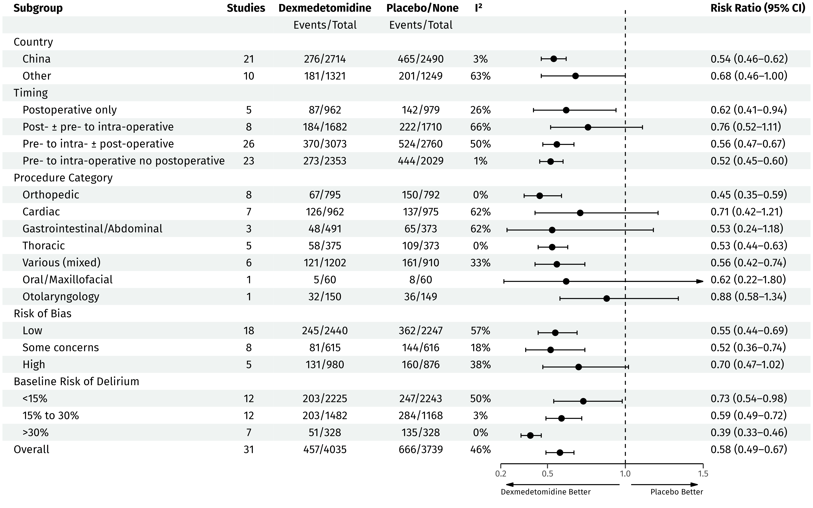
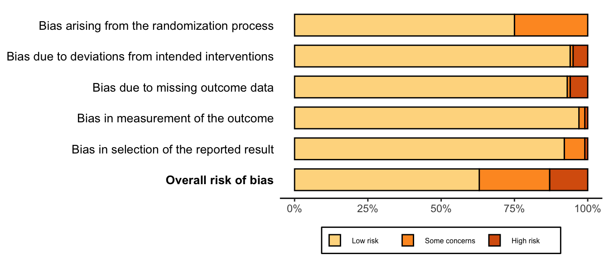
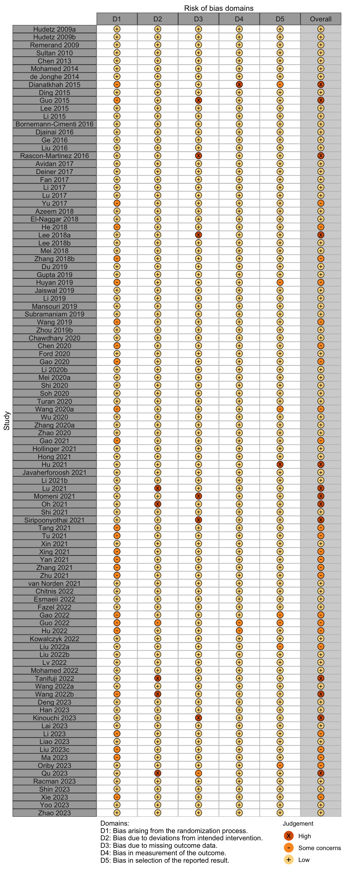

Delirium Prophylaxis
Recent upates
| Date | Modification |
|---|---|
| 2023-10-24 | Updated to most current included studies. Removed risk of bias tallies from forest plots where not pertinent to outcome. Added physical function table. |
| 2023-10-26 | Added risk differences for hypotension and bradycardia. For other complications and mortality changed effect measure to risk difference owing to infrequent events (now consistent with tables). |
New limit meta for dexm outside China having sufficient studies n = 10
Key Question
Among older patients undergoing surgery and anesthesia, does dexmedetomidine, ketamine, ramelteon, or melatonin administered during the perioperative period decrease the risk of postoperative delirium or other adverse cognitive outcomes?
Outcome Importance
Outcomes Reported
| Outcome | RCT, N = 110 | NR Trial, N = 9 | Quasi-exp, N = 2 | Prosp Coh, N = 5 | Retro Coh, N = 14 |
|---|---|---|---|---|---|
| ADL | |||||
| Complications | 42 (38%) | 2 (22%) | 2 (100%) | 2 (14%) | |
| DNCR/PND | 35 (32%) | 4 (44%) | |||
| Delirium | 64 (58%) | 3 (33%) | 2 (100%) | 5 (100%) | 13 (93%) |
| Delirium duration | 3 (2.7%) | ||||
| Discharge location | |||||
| Mortality | 19 (17%) | 1 (50%) | 2 (14%) | ||
| Opioid use | 3 (2.7%) | ||||
| Pain | 2 (1.8%) | ||||
| QoR | |||||
| Readmission | 3 (2.7%) | 1 (7.1%) | |||
| Satisfaction | |||||
| ADL: activities of daily living; NCR: neurocognitive recovery; POCD: postoperative neurocognitive disorder; QoR: quality of recovery; RCT: randomized clinical trial; NR Trial: non-randomized trial; Quasi-exp: before-after or time series; Prosp Coh: prospective cohort; Retro Coh: retrospective cohort. | |||||
| Outcome | RCT, N = 110 | NR Trial, N = 9 | Quasi-exp, N = 2 | Prosp Coh, N = 5 | Retro Coh, N = 14 |
|---|---|---|---|---|---|
| Delirium duration | 14 (13%) | 1 (50%) | 1 (7.1%) | ||
| Length of stay | 33 (30%) | 2 (100%) | 1 (20%) | 1 (7.1%) | |
| Opioid use | 13 (12%) | ||||
| RCT: randomized clinical trial; NR Trial: non-randomized trial; Quasi-exp: before-after or time series; Prosp Coh: prospective cohort; Retro Coh: retrospective cohort. | |||||
| Outcome | RCT, N = 110 | NR Trial, N = 9 | Quasi-exp, N = 2 | Prosp Coh, N = 5 | Retro Coh, N = 14 |
|---|---|---|---|---|---|
| ADL | 2 (1.8%) | ||||
| DNCR/PND | 52 (47%) | 6 (67%) | 1 (7.1%) | ||
| Delirium | 6 (5.5%) | ||||
| Complications | |||||
| Pain | 17 (15%) | ||||
| Quality of life | |||||
| QoR | 2 (1.8%) | ||||
| Satisfaction | |||||
| ADL: activities of daily living; NCR: neurocognitive recovery; POCD: postoperative neurocognitive disorder; QoR: quality of recovery; RCT: randomized clinical trial; NR Trial: non-randomized trial; Quasi-exp: before-after or time series; Prosp Coh: prospective cohort; Retro Coh: retrospective cohort. | |||||
Included Studies
| Design | Studies |
|---|---|
| Randomized Clinical Trial | 108 |
| Nonrandomized Trial | 9 |
| Before-After/Time Series | 2 |
| Prospective Cohort | 4 |
| Retrospective Cohort | 11 |
| Total | 134 |
| Studies with multiple publications counted only once (applied to 1 trial with 2 publications). | |
Design, centers, country, and surgery
| ID | Studya | Centers | Enrolled | Countryb | Surgery |
|---|---|---|---|---|---|
| Dexmedetomidine - Randomized Clinical Trial | |||||
| 13579 | 1 | 70 | Egyptb | Cardiac | |
| 7240 | 1 | 70 | Canada | Cardiac | |
| 2288 | 1 | 185 | Canada | Cardiac | |
| 1819 | 1 | 60 | Chinab | Cardiac | |
| 5269 | 1 | 40 | Chinab | Cardiac | |
| 13777 | 1 | 50 | Chinab | Cardiac | |
| 17683 | 1 | 49 | Poland | Cardiac | |
| 24 | 2 | 285 | Chinab | Cardiac | |
| 2173 | 1 | 420 | Belgium | Cardiac | |
| 17019 | 1 | 469 | USA | Cardiac | |
| 18870 | 1 | 78 | Slovenia | Cardiac | |
| 2396 | 2 | 306 | Australia | Cardiac | |
| 20454 | 1 | 108 | South Korea | Cardiac | |
| 2624 | 1 | 140 | USA | Cardiac | |
| 16008 | 6 | 798 | USA | Cardiac | |
| 16023 | 1 | 80 | Chinab | Cardiac | |
| 335 | 1 | 63 | Germany | Cardiac|GI/Abdominal | |
| 18597 | 1 | 304 | Chinab | ENT | |
| 5436 | 1 | 126 | Chinab | GI/Abdominal | |
| 889 | 1 | 88 | Chinab | GI/Abdominal | |
| 1288 | 1 | 87 | Chinab | GI/Abdominal | |
| 20855 | 1 | 150 | Chinab | GI/Abdominal | |
| 17531 | 1 | 90 | Chinab | GI/Abdominal | |
| 17556 | 1 | 80 | Chinab | GI/Abdominal | |
| 5024 | 1 | 100 | Chinab | GI/Abdominal | |
| 4914 | 1 | 120 | Chinab | GI/Abdominal | |
| 20870 | 1 | 96 | Chinab | GI/Abdominal | |
| 13941 | 1 | 58 | Egyptb | GI/Abdominal | |
| 12900 | 1 | 100 | Chinab | GI/Abdominal | |
| 20881 | 1 | 80 | Chinab | GI/Abdominal | |
| 18909 | 1 | 240 | Chinab | GI/Abdominal | |
| 1919 | 1 | 60 | Chinab | GI/Abdominal | |
| 20885 | 1 | 80 | Chinab | GI/Abdominal | |
| 20886 | 1 | 60 | Chinab | GI/Abdominal | |
| 8558 | 13 | 808 | Chinab | GI/Abdominal|Hepatic | |
| 5480 | 1 | 174 | Chinab | GI/Abdominal|Neuro|Urol | |
| 13483 | 1 | 198 | Chinab | GI/Abdominal|Ortho|Thoracic | |
| 261 | 1 | 354 | South Korea | GI/Abdominal|Urol | |
| 328 | 1 | 120 | Chinab | Headneck | |
| 1117 | 1 | 150 | Iranb | Ophtho | |
| 5452 | 1 | 184 | Chinab | Oralmax | |
| 16845 | 1 | 120 | Chinab | Oralmax | |
| 1625 | 1 | 44 | Chinab | Oralmax | |
| 18346 | 2 | 108 | Chinab | Ortho | |
| 17503 | 1 | 95 | Chinab | Ortho | |
| 5240 | 2 | 712 | Chinab | Ortho | |
| 17575 | 1 | 60 | Chinab | Ortho | |
| 2748 | 1 | 132 | South Korea | Ortho | |
| 742 | 1 | 164 | Chinab | Ortho | |
| 18575 | 1 | 98 | Chinab | Ortho | |
| 1419 | 1 | 200 | Chinab | Ortho | |
| 3130 | 1 | 152 | Chinab | Ortho | |
| 1735 | 1 | 336 | Chinab | Ortho | |
| 1267 | 1 | 415 | Chinab | Ortho | |
| 17001 | 1 | 748 | South Korea | Ortho | |
| 13075 | 1 | 110 | Chinab | Ortho | |
| 16303 | 1 | 100 | Chinab | Ortho | |
| 18937 | 1 | 128 | South Korea | Ortho | |
| 5147 | 1 | 240 | Chinab | Ortho | |
| 18958 | 1 | 88 | Chinab | Ortho | |
| 11129 | 1 | 187 | Chinab | Ortho | |
| 13568 | 1 | 90 | Chinab | Thoracic | |
| 3046 | 1 | 177 | Chinab | Thoracic | |
| 69 | 1 | 360 | Chinab | Thoracic | |
| 18558 | 1 | 90 | Chinab | Thoracic | |
| 16741 | 1 | 60 | Chinab | Thoracic | |
| 3391 | 1 | 106 | Chinab | Thoracic | |
| 13731 | 1 | 92 | Chinab | Thoracic | |
| 4798 | 1 | 40 | Chinab | Urol | |
| 7151 | 1 | 125 | Chinab | Urol | |
| 5251 | 1 | 87 | Indiab | Variousc | |
| 2022 | 10 | 429 | USA | Variousc | |
| 20465 | 1 | 620 | Chinab | Variousc | |
| 16718 | 1 | 327 | Chinab | Variousc | |
| 16734 | 1 | 100 | Chinab | Variousc | |
| 3716 | 1 | 432 | Chinab | Variousc | |
| Dexmedetomidine - Nonrandomized Trial | |||||
| 13393 | 1 | 178 | Chinab | GI/Abdominal | |
| 13361 | 1 | 110 | Chinab | GI/Abdominal | |
| 5183 | 1 | 96 | Chinab | GI/Abdominal | |
| 5052 | 1 | 140 | Chinab | GI/Abdominal | |
| 120 | 1 | 140 | Chinab | Ortho | |
| 13368 | 1 | 165 | Chinab | Spine | |
| 13301 | 1 | 87 | Chinab | Thoracic | |
| Dexmedetomidine - Prospective Cohort | |||||
| 18819 | 1 | 676 | Chinab | GI/Abdominal | |
| 17146 | 4 | 98 | Singapore | Other | |
| Dexmedetomidine - Retrospective Cohort | |||||
| 2517 | 1 | 505 | USA | Cardiac | |
| 103 | 1 | 278 | USA | Cardiac | |
| 5066 | 1 | 714 | South Korea | Ortho | |
| 16830 | 1 | 60 | Chinab | Ortho | |
| 13367 | NA | 120 | NAb | Ortho | |
| 17150 | 1 | 195 | Chinab | Urol | |
| Ketamine - Randomized Clinical Trial | |||||
| 181 | 1 | 78 | USA | Cardiac | |
| 1847 | 1 | 58 | USA | Cardiac | |
| 5189 | 1 | 75 | Thailand | Cardiac | |
| 18435 | 1 | 84 | Chinab | GI/Abdominal | |
| 18610 | 1 | 68 | China | GI/Abdominal | |
| 15285 | 1 | 60 | Austria | GI/Abdominal|Hepatic | |
| 18690 | 1 | 90 | Egyptb | Ophtho | |
| 2217 | 1 | 80 | Mexicob | Ophtho | |
| 2578 | 1 | 56 | South Korea | Ortho | |
| 3788 | 1 | 160 | France | Ortho | |
| 13184 | 1 | 80 | Chinab | Ortho | |
| 2866 | 5 | 672 | USA | Variousc | |
| 1937 | 2 | 143 | Switzerland | Variousc | |
| Ketamine - Prospective Cohort | |||||
| 1140 | 1 | 187 | Norway | Ortho | |
| 17147 | 4 | 98 | Singapore | Other | |
| 9616 | 1 | 98 | USA | Spine | |
| Ketamine - Retrospective Cohort | |||||
| 17130 | 4,400 | 564,226 | USA | Ortho | |
| 17136 | 4,400 | 1,130,569 | USA | Ortho | |
| 18978 | NA | 527,254 | USA | Ortho | |
| 17144 | 1 | 41,766 | USA | Ortho | |
| 17145 | 1 | 41,766 | USA | Ortho | |
| 17149 | 1 | 84 | USA | Thoracic | |
| Melatonin - Randomized Clinical Trial | |||||
| 17055 | 1 | 145 | Iranb | Cardiac | |
| 17057 | 1 | 50 | Egyptb | Cardiac | |
| 16558 | 2 | 210 | Australia | Cardiac | |
| 9256 | 1 | 60 | Iranb | Cardiac | |
| 9741 | 1 | 297 | Chinab | Cardiac | |
| 17152 | 1 | 150 | Iranb | General|Neuro|Ortho | |
| 602 | 1 | 148 | Chinab | Ortho | |
| 17153 | 1 | 80 | Iranb | Ortho | |
| 17154 | 1 | 80 | Egyptb | Ortho | |
| 5164 | 1 | 152 | Egyptb | Ortho | |
| 16552 | 3 | 452 | Netherlands | Ortho | |
| Melatonin - Nonrandomized Trial | |||||
| 16537 | 1 | 500 | Slovakia | Cardiac | |
| 13824 | 1 | 500 | Slovakia | Cardiac | |
| Ramelteon - Randomized Clinical Trial | |||||
| 17084 | 1 | 112 | Japan | GI/Abdominal|Hepatic | |
| 18530 | 1 | 108 | Japan | General|Thoracic|Urol|Vasc | |
| 3841 | 1 | 80 | USA | Ortho | |
| 4150 | 1 | 120 | USA | Thoracic | |
| 13512 | 1 | 100 | Indiab | Variousc | |
| Ramelteon - Before-After/Time Series | |||||
| 693 | 1 | 309 | Japan | Hepatic | |
| 2997 | 1 | 82 | Japan | Thoracic | |
| Ramelteon - Retrospective Cohort | |||||
| 20438 | 1 | 69 | Japan | Headneck | |
| Remimazolam - Randomized Clinical Trial | |||||
| 18582 | 1 | 104 | Chinab | GI/Abdominal | |
| Ulinastatin - Randomized Clinical Trial | |||||
| 13406 | 1 | 156 | Chinab | Cardiac | |
| 2598 | 1 | 80 | Chinab | ENT | |
| 20877 | 1 | 164 | Chinab | GI/Abdominal | |
| 13546 | 1 | 60 | Chinab | Neuro | |
| Gabapentin - Retrospective Cohort | |||||
| 18979 | NA | 527,254 | USA | Ortho | |
| GI: gastrointestinal; Ortho: orthopedic; Neuro: neurological; Oralmax: oral maxillofacial; Vasc: vascular; ENT: ear nose and throat. | |||||
| a Studies examining drugs not directly relevant to recommendations but potentially to the evidence space (eg, a connected network including indirect evidence) are included here. | |||||
| b Non very-high Human Development Index country. | |||||
| c Described as various or more than 4 different types of surgery. | |||||
Country Summary
| N = 108a | |
|---|---|
| Country | |
| China | 65 (60%) |
| USA | 8 (7.4%) |
| Egypt | 6 (5.6%) |
| South Korea | 6 (5.6%) |
| Iran | 5 (4.6%) |
| Australia | 2 (1.9%) |
| Canada | 2 (1.9%) |
| India | 2 (1.9%) |
| Japan | 2 (1.9%) |
| Austria | 1 (0.9%) |
| Belgium | 1 (0.9%) |
| France | 1 (0.9%) |
| Germany | 1 (0.9%) |
| Mexico | 1 (0.9%) |
| Netherlands | 1 (0.9%) |
| Poland | 1 (0.9%) |
| Slovenia | 1 (0.9%) |
| Switzerland | 1 (0.9%) |
| Thailand | 1 (0.9%) |
| a n (%) | |
Interventions & Comparators
Dexmedetomidine
| Study | N | Comparator | ASA | Anesthetic | Ageb | MMSEb | Dexmedetomidine mcg/kg | Timingd | |||||
|---|---|---|---|---|---|---|---|---|---|---|---|---|---|
| PSa | Vol | TIVA | Reg | Sed | Load | Maint/hrc | Postop | ||||||
| Cardiac - Randomized Clinical Trial | |||||||||||||
| 147 | MS | NR | 71.0 {65-75} |
||||||||||
| 152 | Dex | 71.5 {66-76} |
(0.10.7) | ||||||||||
| 92 | Prop | NR | 72.4 (6.2) |
||||||||||
| 91 | Dex | 72.7 (6.4) |
0.4 | (0.20.7) | |||||||||
| 24 | Plac | 123 | 72.0 (4.0) |
26.9 (0.8) |
|||||||||
| 24 | Dex | 70.0 (3.0) |
27.2 (0.9) |
0.3 | 0.3 | ||||||||
| 143 | Plac | 234 | 67.5 (5.3) |
29 [28-30] |
|||||||||
| 142 | Dex | 66.4 (5.4) |
29 [28-30] |
0.6 | 0.4 | 0.1 | |||||||
| 30 | Mid | NR | 66.7 (5.6) |
||||||||||
| 30 | Dex | 65.3 (4.8) |
(0.40.7) | ||||||||||
| 61 | Prop | NR | 70.0 {64-79} |
||||||||||
| 59 | Dex | 66.5 {63-74} |
0.5 | (0.10.4) | |||||||||
| 39 | Ulin | 123 | 70.6 (4.4) |
||||||||||
| 38 | Plac | 70.0 (4.9) |
|||||||||||
| 39 | Dex/Ulin | 69.6 (5.0) |
0.4 | ||||||||||
| 38 | Dex | 69.8 (5.1) |
0.4 | ||||||||||
| 30 | Plac | 23 | 70.4 (4.2) |
||||||||||
| 30 | Dex | 69.5 (5.1) |
1.0 | (0.30.5) | |||||||||
| 54 | Plac | NR | 65.0 [37-83] |
||||||||||
| 54 | Dex | 65.0 [23-82] |
|||||||||||
| 396 | Plac | 1234 | 62.0 (12.0) |
||||||||||
| 398 | Dex | 63.0 (11.0) |
0.1 | 0.4 | |||||||||
| 40 | Plac | 23 | 67.7 (8.8) |
28.2 |
|||||||||
| 40 | Dex | 68.2 (8.6) |
28.1 |
0.5 | 0.6 | ||||||||
| 20 | Plac | 23 | 71.4 (4.5) |
28.4 (1.3) |
|||||||||
| 20 | Dex | 71.4 (4.5) |
28.5 (1.4) |
0.6 | 0.2 | ||||||||
| 203 | Plac | NR | 70.0 {59-81} |
28 {26-29} |
|||||||||
| 205 | Dex | 71.0 {61-81} |
28 {26-29} |
0.4 | |||||||||
| 33 | Prop | NR | 78.8 |
30.2 |
|||||||||
| 34 | Dex | 78.7 |
30.1 |
0.5 (01.5) | |||||||||
| 23 | None | 23 | 66.0 (5.0) |
||||||||||
| 23 | Dex | 67.0 (10.0) |
0.5 | 0.25 | |||||||||
| 206 | Plac | NR | 70.0 {65-75} |
||||||||||
| 188 | Dex | 67.5 {63-73} |
1 | ||||||||||
| 34 | Prop | NR | 83.5 {79-87} |
26 {25-28} |
|||||||||
| 37 | Dex | 83.0 {77-85} |
27 {25-28} |
0.5 | (0.21) | ||||||||
| Ortho - Randomized Clinical Trial | |||||||||||||
| 40 | Plac | 23 | 75.2 (7.8) |
22.4 (2.6) |
|||||||||
| 39 | Dex | 72.8 (8.2) |
23.3 (2.7) |
(0.20.4) | |||||||||
| 58 | Plac | 23 | 72.8 (9.2) |
25.4 (2.4) |
|||||||||
| 60 | Dex | 71.2 (8.1) |
26.2 (3.5) |
(0.20.4) | |||||||||
| 76 | Dex | 23 | 65.0 (5.8) |
28.3 (1.3) |
0.5 | 0.5 | |||||||
| 75 | Dex | 65.5 (5.3) |
28.5 (1.2) |
0.5 | 0.5 | 0.06 | |||||||
| 31 | Plac | 12 | 67.2 (5.0) |
||||||||||
| 33 | Preg | 68.4 (5.1) |
|||||||||||
| 31 | Dex | 68.8 (5.9) |
0.5 | 0.5 | |||||||||
| 29 | Dex/Preg | 65.4 (9.7) |
0.5 | 0.5 | |||||||||
| 148 | Prop | 23 | 74.0 (6.0) |
25.7 (1.7) |
|||||||||
| 148 | Dex | 76.0 (7.0) |
26.2 (2.1) |
0.9 | (0.10.5) | ||||||||
| 55 | Prop | 123 | 68.2 (6.4) |
||||||||||
| 54 | Mid | 66.9 (6.6) |
|||||||||||
| 55 | Dex | 69.3 (7.1) |
|||||||||||
| 183 | Prop | NR | 73.0 (11.0) |
27.1 (1.4) |
|||||||||
| 183 | Dex | 72.0 (9.0) |
26.6 (2.9) |
0.9 | (0.10.5) | ||||||||
| 120 | Plac | 123 | 79.0 (6.8) |
||||||||||
| 120 | Dex | 78.1 (6.4) |
0.5 | 0.3 | |||||||||
| 354 | Plac | 1234 | 71.0 (5.0) |
26.1 (3.0) |
|||||||||
| 356 | Dex | 71.0 (5.0) |
26.1 (2.9) |
0.03 | |||||||||
| 55 | Plac | 23 | 69.2 (3.8) |
||||||||||
| 55 | Dex | 68.3 (3.9) |
0.5 | ||||||||||
| 50 | Plac | 12 | 72.7 (4.3) |
29.2 (0.3) |
|||||||||
| 50 | Dex | 73.2 (5.8) |
29.5 (0.2) |
0.3 | |||||||||
| 92 | Plac | 123 | 75.2 (6.1) |
28.6 (0.9) |
|||||||||
| 95 | Dex | 74.1 (4.4) |
28.9 (0.8) |
1.0 | 0.5 | ||||||||
| 48 | Plac | 123 | 67.2 (5.2) |
||||||||||
| 47 | Dex | 68.2 (6.0) |
1.0 | 0.4 | 2 | ||||||||
| 20 | None | NR | 68.9 (4.3) |
||||||||||
| 20 | Dex | 69.2 (5.0) |
0.4 | ||||||||||
| 52 | Rem | 23 | 70.8 (4.4) |
||||||||||
| 53 | Dex | 71.8 (5.5) |
(0.20.7) | ||||||||||
| 49 | None | NR | 68.5 (2.2) |
||||||||||
| 49 | Dex | 67.7 (2.8) |
4 | 0.2 | |||||||||
| 366 | Prop | 12 | 71.0 {67-75} |
||||||||||
| 366 | Dex | 72.0 {68-76} |
1.0 | (0.10.5) | |||||||||
| 64 | Plac | 123 | 74.2 (6.2) |
||||||||||
| 64 | Dex | 74.4 (6.0) |
1.0 | 0.2 | |||||||||
| 42 | Plac | NR | 69.7 (7.2) |
25.8 (0.6) |
|||||||||
| 40 | Dex | 70.9 (7.2) |
25.9 (0.4) |
200 | |||||||||
| GI/Abd - Randomized Clinical Trial | |||||||||||||
| 63 | Plac | NR | 67.9 (6.6) |
28.5 (1.1) |
|||||||||
| 59 | Dex | 66.2 (7.5) |
28.2 (0.8) |
1.0 | 0.4 | ||||||||
| 25 | Plac | 123 | 67.8 (5.4) |
||||||||||
| 25 | Dex | 63.9 (5.0) |
0.17 | 0.4 | |||||||||
| 50 | Plac | 123 | 70.0 (6.0) |
28.3 (1.4) |
|||||||||
| 50 | Dex | 69.0 (5.0) |
28.4 (1.3) |
1.0 | 0.4 | ||||||||
| 41 | Ulin | 12 | 72.4 (7.3) |
25.5 (3.7) |
|||||||||
| 41 | Plac | 73.9 (8.4) |
26.8 (2.6) |
||||||||||
| 41 | Dex | 73.8 (7.5) |
26.5 (3.3) |
0.5 | 0.3 | ||||||||
| 41 | Dex | 71.9 (8.2) |
26.6 (2.5) |
0.5 | 0.3 | ||||||||
| 48 | Plac | 123 | 69.1 (1.3) |
28.1 (3.3) |
|||||||||
| 48 | Dex | 68.4 (1.5) |
28.4 (3.2) |
||||||||||
| 40 | None | NR | 85.3 (1.5) |
||||||||||
| 40 | Dex | 85.5 (1.6) |
(0.20.4) | ||||||||||
| 20 | Plac | 12 | 68.7 (13.5) |
26.8 (1.5) |
|||||||||
| 20 | Dex | 69.3 (12.5) |
26.5 (1.7) |
0.6 | |||||||||
| 45 | Plac | 12 | 65.4 (11.7) |
29.3 (0.4) |
|||||||||
| 43 | Dex | 64.9 (11.4) |
29.4 (0.5) |
0.3 | 1 | ||||||||
| 18 | Plac | 23 | 72.0 (5.0) |
29.5 (0.7) |
|||||||||
| 17 | Dex | 72.0 (4.0) |
29.5 (0.6) |
0.5 | 0.5 | ||||||||
| 19 | Dex | 74.0 (5.0) |
29.6 (0.6) |
0.5 | 0.7 | ||||||||
| 47 | Plac | 12 | 68.1 (2.6) |
||||||||||
| 47 | Dex | 68.9 (2.9) |
0.5 | 0.3 | |||||||||
| 50 | Dex | 69.0 (2.0) |
0.3 | 0.3 | |||||||||
| 30 | Plac | 123 | 73.4 (5.1) |
28.7 (2.1) |
|||||||||
| 30 | Dex | 74.7 (2.6) |
27.6 (3.2) |
0.3 | 0.2 | ||||||||
| 30 | Dex | 71.2 (3.5) |
28.0 (1.7) |
0.3 | 0.5 | ||||||||
| 30 | Dex | 69.8 (4.3) |
28.4 (2.6) |
0.3 | 0.8 | ||||||||
| 331 | Plac | 123 | 70.4 (6.5) |
||||||||||
| 344 | Dex | 70.1 (5.8) |
0.5 | 0.2 | |||||||||
| 50 | Plac | 12 | 70.7 (6.5) |
||||||||||
| 50 | Dex | 69.7 (6.6) |
0.5 | 0.4 | |||||||||
| 30 | Plac | 23 | 68.0 [66-71] |
||||||||||
| 30 | Dex | 69.0 [67-70] |
0.5 | 0.4 | |||||||||
| 30 | Plac | 12 | 69.0 (6.0) |
||||||||||
| 30 | Dex | 68.0 (5.0) |
0.6 | 0.2 | |||||||||
| 45 | None | 23 | 68.5 (3.8) |
||||||||||
| 45 | Dex | 68.5 (3.8) |
1.0 | 0.5 | |||||||||
| 40 | Other | 12 | 66.9 (4.3) |
26.8 (2.5) |
|||||||||
| 40 | Dex | 67.5 (4.3) |
27.6 (2.4) |
1.0 | 0.5 | ||||||||
| 34 | Rem | NR | 70.1 (3.6) |
27.7 (1.7) |
|||||||||
| 35 | Plac | 69.7 (2.5) |
27.7 (1.9) |
||||||||||
| 35 | Dex | 71.3 (3.6) |
27.8 (2.1) |
0.5 | (0.30.5) | ||||||||
| 119 | Plac | NR | 68.6 (5.5) |
||||||||||
| 117 | Dex | 67.9 (5.6) |
3 | ||||||||||
| Various - Randomized Clinical Trial | |||||||||||||
| 201 | Plac | 1234 | 74.0 {71-78} |
||||||||||
| 189 | Dex | 74.0 {71-78} |
0.5 | ||||||||||
| 109 | Plac | 123 | 73.1 (6.1) |
||||||||||
| 95 | Dex | 72.2 (5.4) |
1.0 | (0.20.7) | |||||||||
| 114 | Dex | 73.1 (6.4) |
1.0 | ||||||||||
| 100 | Mid | 123 | 69.4 (4.5) |
25.0 (3.3) |
|||||||||
| 98 | Dex | 70.5 (5.0) |
24.9 (3.9) |
0.5 | |||||||||
| 40 | Prop | 123 | 64.7 (5.9) |
26.4 (1.3) |
|||||||||
| 40 | Dex | 66.2 (6.6) |
26.1 (1.2) |
(0.50.7) | |||||||||
| 310 | Plac | 123 | 69.0 (6.4) |
27.4 (2.7) |
|||||||||
| 309 | Dex | 69.0 (6.6) |
27.4 (2.6) |
0.6 | 0.5 | ||||||||
| 101 | None | 23 | 69.2 (4.1) |
27 {24-30} |
|||||||||
| 108 | Dex | 70.0 (4.5) |
27 {24-30} |
1.0 | 100e | ||||||||
| 105 | Dex | 69.4 (3.9) |
27 {24-30} |
1.0 | 200e | ||||||||
| 102 | Dex | 69.3 (4.1) |
27 {24-30} |
1.0 | 400e | ||||||||
| 87 | Plac | 23 | 71.4 (4.9) |
25.8 (0.8) |
|||||||||
| 87 | Dex | 70.6 (4.2) |
26.1 (0.7) |
1.0 | 0.4 | ||||||||
| 32 | Plac | 1234 | 70.5 (6.2) |
||||||||||
| 28 | Dex | 70.4 (7.1) |
0.7 | ||||||||||
| 157 | Plac | NR | 68.4 (6.6) |
||||||||||
| 152 | Dex | 67.9 (5.9) |
|||||||||||
| 40 | None | 123 | 71.0 (7.1) |
27 {23-30} |
|||||||||
| 42 | Dex | 69.4 (6.8) |
27 {23-30} |
0.6 | |||||||||
| Thoracic - Randomized Clinical Trial | |||||||||||||
| 46 | Mid | 12 | 69.1 (4.9) |
29.8 (0.7) |
|||||||||
| 46 | Dex | 68.7 (4.3) |
29.8 (0.7) |
0.2 | 0.5 (0.20.7) | ||||||||
| 30 | Plac | 123 | 83.2 (5.1) |
||||||||||
| 30 | Mid | 81.9 (6.2) |
|||||||||||
| 30 | Dex | 82.5 (5.4) |
0.5 | 0.4 | |||||||||
| 173 | Plac | 23 | 71.0 (6.0) |
||||||||||
| 173 | Dex | 70.0 (5.0) |
0.5 | 0.1 | |||||||||
| 53 | Plac | 23 | 68.7 (3.4) |
28.0 (0.9) |
|||||||||
| 53 | Dex | 68.7 (4.6) |
27.9 (0.9) |
0.5 | |||||||||
| 87 | Plac | 123 | 69.1 (5.1) |
||||||||||
| 90 | Dex | 69.6 (4.5) |
0.4 | 0.1 | |||||||||
| 31 | Plac | 12 | 68.5 (2.3) |
||||||||||
| 29 | Dex | 68.1 (2.6) |
1.0 | ||||||||||
| 30 | None | 23 | 71.2 (5.1) |
||||||||||
| 29 | Dex | 70.6 (5.3) |
1.0 | 0.5 | |||||||||
| Oralmax - Randomized Clinical Trial | |||||||||||||
| 73 | Plac | 123 | 71.3 (5.1) |
28.0 (1.6) |
|||||||||
| 76 | Dex | 70.7 (5.2) |
28.2 (1.6) |
0.2 | |||||||||
| 20 | Mid | NR | 60.5 (8.2) |
||||||||||
| 20 | Dex | 60.0 (10.1) |
1.0 | (0.20.7) | |||||||||
| 60 | Plac | 12 | 72.1 (5.9) |
||||||||||
| 60 | Dex | 71.3 (6.7) |
0.5 | 0.4 | |||||||||
| Urol - Randomized Clinical Trial | |||||||||||||
| 20 | Plac | NR | |||||||||||
| 20 | Dex | 2 | |||||||||||
| 60 | Plac | 12 | 66.7 (4.1) |
25.4 (2.2) |
|||||||||
| 60 | Dex | 65.6 (3.4) |
25.5 (2.5) |
0.4 | |||||||||
| Headneck - Randomized Clinical Trial | |||||||||||||
| 30 | Mid/Prop | NR | 69.9 (2.8) |
28.5 (1.2) |
|||||||||
| 30 | Mid/Sevo | 70.1 (3.2) |
28.6 (1.2) |
||||||||||
| 30 | Dex | 68.8 (3.0) |
29.0 (0.9) |
1.0 | 0.5 | ||||||||
| 30 | Dex | 69.3 (3.1) |
28.8 (1.1) |
1.0 | 0.5 | ||||||||
| ENT - Randomized Clinical Trial | |||||||||||||
| 149 | Plac | NR | 70.1 (4.2) |
23.9 (4.9) |
|||||||||
| 150 | Dex | 70.4 (5.0) |
24.3 (4.8) |
0.5 | 0.2 | ||||||||
| Ortho - Nonrandomized Trial | |||||||||||||
| 70 | Plac | NR | 69.7 (5.3) |
27.3 (0.7) |
|||||||||
| 70 | Dex | 68.2 (5.6) |
27.6 (0.5) |
0.5 | 0.4 | ||||||||
| Spine - Nonrandomized Trial | |||||||||||||
| 46 | Plac | 123 | 70.6 (6.1) |
25.6 (4.8) |
|||||||||
| 57 | Dex | 71.4 (6.7) |
24.1 (4.6) |
0.5 | |||||||||
| 62 | Dex | 72.5 (7.2) |
25.8 (4.5) |
1 | |||||||||
| Ophtho - Randomized Clinical Trial | |||||||||||||
| 50 | Plac | 12 | 64.0 (7.2) |
||||||||||
| 50 | Mid | 63.6 (8.3) |
|||||||||||
| 50 | Dex | 66.5 (1.6) |
1 | ||||||||||
| 30 | Plac | 23 | 70.6 (5.6) |
||||||||||
| 30 | Ket | 72.8 (5.3) |
|||||||||||
| 30 | Dex | 73.3 (5.1) |
0.5 | ||||||||||
| GI/Abd - Nonrandomized Trial | |||||||||||||
| 48 | Plac | 12 | 72.1 (32.2) |
||||||||||
| 48 | Dex | 71.9 (31.4) |
0.5 | ||||||||||
| 60 | Plac | NR | 74.1 (13.9) |
28.9 (1.2) |
|||||||||
| 80 | Dex | 73.8 (14.5) |
28.9 (1.2) |
1.0 | (0.20.7) | ||||||||
| 95 | Dex/Ulin | NR | 65.3 (5.7) |
26.4 (0.2) |
0.5 | 0.3 | |||||||
| 83 | Dex | 64.9 (5.7) |
27.2 |
0.5 | 0.3 | ||||||||
| 50 | Plac | NR | 68.3 (2.1) |
28.5 (4.2) |
|||||||||
| 60 | Dex | 68.4 (3.3) |
28.5 (4.3) |
0.5 | 0.4 | ||||||||
| Thoracic - Nonrandomized Trial | |||||||||||||
| 46 | None | NR | 67.3 (2.1) |
28.5 (4.2) |
|||||||||
| 41 | Dex | 67.4 (3.3) |
28.5 (4.3) |
0.5 | 0.1 | ||||||||
| GI/Abd - Prospective Cohort | |||||||||||||
| 289 | None | 123 | 69.3 (5.1) |
||||||||||
| 354 | Dex | 69.3 (5.1) |
Unspecified | ||||||||||
| Other - Prospective Cohort | |||||||||||||
| 97 | None | NR | |||||||||||
| 1 | Dex | ||||||||||||
| Cardiac - Retrospective Cohort | |||||||||||||
| 283 | Plac | NR | 73.5 (6.2) |
||||||||||
| 222 | Dex | 73.6 (6.1) |
(0.240.6) | ||||||||||
| 209 | Prop | NR | 62.0 (13.0) |
||||||||||
| 69 | Dex | 63.0 (13.0) |
0.193 (0.0780.308) | ||||||||||
| Ortho - Retrospective Cohort | |||||||||||||
| 58 | Plac | 12 | 72.1 (0.2) |
28.7 (1.1) |
|||||||||
| 62 | Dex | 72.2 (0.3) |
28.6 (1.3) |
0.5 | 0.4 | ||||||||
| 357 | Prop | 123 | 74.0 {70-78} |
||||||||||
| 357 | Dex | 74.0 {70-79} |
1.0 | (0.10.5) | |||||||||
| 30 | None | NR | 67.9 (5.0) |
18.0 (1.5) |
|||||||||
| 30 | Dex | 67.3 (5.5) |
18.3 (2.0) |
0.5 | 0.4 | ||||||||
| Urol - Retrospective Cohort | |||||||||||||
| 35 | None | 1234 | 68.0 [66-72] |
||||||||||
| 160 | Dex | 68.0 [66-72] |
|||||||||||
| GI: gastrointestinal; Abd: abdominal (includes hepatic); Ortho: orthopedic; Various: more that one procedure category; Oralmax: oral and maxillofacial; Ophtho; ophthalmologic; Urol: urologic; Dex: dexmedetomidine; Ulin: ulinastatin; Hal: haloperidol; Mid: midazolam; Mid/Prop: midazolam/propofol; Mid/Seve: midazolam/sevoflurane; Preg: pregabalin; Prop: propofol; Plac; placebo; PS: physical status; Vol: volatile; TIVA: total intravenous anesthesia; Reg: regional; Sed: sedation; MMSE: Mini-Mental State Exam. | |||||||||||||
| a ASA Physical Status of patients included (proportions can be found here[link to table add]). | |||||||||||||
| b Mean Med (SD)[Range]{IQR}. | |||||||||||||
| c Maintenance range if reported in parentheses. | |||||||||||||
| d Bars indicate adminstration times from left to right: preoperative, induction, intraoperative, and postoperative (includes PACU). | |||||||||||||
| e Given as a single dose. | |||||||||||||
Ketamine
| Study | N | Comparator | ASA | Anesthetic | Ageb | MMSEb | Dose | Maintenance | Timingc | ||
|---|---|---|---|---|---|---|---|---|---|---|---|
| PSa | Vol | TIVA | Reg | (mg/kg) | (mg/kg) | ||||||
| Cardiac - Randomized Clinical Trial | |||||||||||
| 26 | None | NR | 64.0 (7.0) |
||||||||
| 26 | Plac | 67.0 (8.0) |
|||||||||
| 26 | Ket | 68.0 (7.0) |
0.5 | ||||||||
| 29 | Plac | 34 | 60.8 (8.0) |
||||||||
| 29 | Ket | 68.0 (8.0) |
0.5 | ||||||||
| 32 | Prop | NR | |||||||||
| 32 | Ket | 1 | |||||||||
| Ortho - Randomized Clinical Trial | |||||||||||
| 75 | Plac | NR | 65.0 (14.0) |
||||||||
| 79 | Ket | 64.0 (13.0) |
0.5 | ||||||||
| 26 | Plac | 123 | 68.4 (6.5) |
26 {24-28} |
|||||||
| 25 | Ket | 68.3 (5.3) |
25 {24-28} |
0.5 | |||||||
| 40 | Suf | 123 | 65.3 (5.2) |
||||||||
| 40 | Ketd | 66.0 (5.3) |
0.5 | ||||||||
| GI/Abd - Randomized Clinical Trial | |||||||||||
| 19 | Plac | 123 | 61.0 (12.4) |
||||||||
| 19 | Ketd | 58.4 (8.1) |
0.01 | ||||||||
| 18 | Ketd | 62.2 (9.8) |
0.25 | 0.12 | |||||||
| 34 | Plac | NR | 70.0 (6.2) |
27.9 (1.6) |
|||||||
| 33 | Ket | 70.6 (7.6) |
28.6 (1.1) |
0.15 | |||||||
| 31 | Plac | 23 | 70.5 (4.2) |
||||||||
| 31 | Ket | 69.5 (4.3) |
0.25 | 0.12 | |||||||
| Various - Randomized Clinical Trial | |||||||||||
| 222 | Plac | NR | 70.0 (6.9) |
||||||||
| 227 | Ket | 70.0 (7.2) |
0.5 | ||||||||
| 223 | Ket | 70.0 (7.3) |
1 | ||||||||
| 44 | Plac | NR | 74.8 (6.6) |
28.3 (2.3) |
|||||||
| 45 | Hal | 73.4 (6.3) |
28.0 (1.3) |
||||||||
| 47 | Ket | 73.4 (6.1) |
27.7 (1.7) |
1 | |||||||
| Ophtho - Randomized Clinical Trial | |||||||||||
| 32 | Plac | 123 | 70.5 (4.7) |
||||||||
| 33 | Ket | 68.7 (7.1) |
0.3 | ||||||||
| 30 | Plac | 23 | 70.6 (5.6) |
||||||||
| 30 | Dex | 73.3 (5.1) |
0.3 | ||||||||
| 30 | Ket | 72.8 (5.3) |
0.3 | ||||||||
| Ortho - Prospective Cohort | |||||||||||
| 119 | None | NR | |||||||||
| 68 | Ket | ||||||||||
| Spine - Prospective Cohort | |||||||||||
| 38 | None | 123 | 71.0 {68-78} |
||||||||
| 60 | Ket | 70.0 {67-75} |
Unspecified | ||||||||
| Other - Prospective Cohort | |||||||||||
| 92 | None | NR | |||||||||
| 6 | Ket | ||||||||||
| Ortho - Retrospective Cohort | |||||||||||
| 31796 | None | NR | |||||||||
| 4070 | Ket | ||||||||||
| 36852 | None | NR | |||||||||
| 99 | Ket | ||||||||||
| 538559 | None | NR | |||||||||
| 25667 | Ket | ||||||||||
| 1081139 | None | NR | |||||||||
| 49430 | Ket | ||||||||||
| 468004 | None | NR | |||||||||
| 37148 | Ket | ||||||||||
| Thoracic - Retrospective Cohort | |||||||||||
| 74 | None | NR | 61.7 (10.5) |
||||||||
| 10 | Ket | 61.7 (10.5) |
|||||||||
| GI: gastrointestinal; Abd: abdominal (includes hepatic); Ortho: orthopedic; Various: more that one procedure category; Dex: dexmedetomidine; Hal: haloperidol; Suf: sufentanil; Prop: propofol; Plac; placebo; PS: physical status; Vol: volatile; TIVA: total intravenous anesthesia; Reg: regional; MMSE: Mini-Mental State Exam. | |||||||||||
| a ASA Physical Status of patients included (proportions can be found here[link to table add]). | |||||||||||
| b Mean Med (SD)[Range]{IQR}. | |||||||||||
| c Bars indicate adminstration times from left to right: preoperative, induction, intraoperative, and postoperative (includes PACU). | |||||||||||
| d S-Ketamine. | |||||||||||
Melatonin/Ramelteon
| Study | N | Comparator | ASA | Anesthetic | Ageb | MMSEb | Dosing | Timingc | ||
|---|---|---|---|---|---|---|---|---|---|---|
| PSa | Vol | TIVA | Reg | |||||||
| Cardiac - Randomized Clinical Trial | ||||||||||
| 71 | Oxaz | NR | 61.7 (9.9) |
|||||||
| 66 | Mel | 60.0 (10.2) |
3mg 10 | |||||||
| 25 | Plac | 34 | 67.9 (4.1) |
29 [28-30] |
||||||
| 25 | Mel | 66.6 (4.8) |
29 [27-30] |
3mg 5 | ||||||
| 104 | Plac | NR | 67.6 (8.0) |
|||||||
| 98 | Mel | 69.0 (8.3) |
3mg 7 | |||||||
| 30 | Plac | NR | 62.9 (8.1) |
|||||||
| 30 | Mel | 60.3 (9.5) |
3mg 3 | |||||||
| 149 | Plac | NR | 71.6 (6.6) |
|||||||
| 148 | Mel | 71.5 (6.7) |
3mg 7 | |||||||
| Ortho - Randomized Clinical Trial | ||||||||||
| 49 | None | 123 | 72.3 (6.4) |
|||||||
| 50 | Mid | 69.9 (8.2) |
||||||||
| 53 | Mel | 70.4 (7.1) |
5mg 2 | |||||||
| 192 | Plac | NR | 83.4 (7.5) |
23 {10-28} |
||||||
| 186 | Mel | 84.1 (8.0) |
23 {12-29} |
3mg 5 | ||||||
| 70 | Plac | 123 | 74.6 (5.4) |
27.1 (0.3) |
||||||
| 69 | Mel | 74.5 (5.7) |
27.3 (0.2) |
1mg 6 | ||||||
| 39 | Plac | NR | 75.4 (5.0) |
28.2 (1.9) |
||||||
| 41 | Ram | 74.3 (5.5) |
28.6 (1.5) |
8mg 3 | ||||||
| 36 | Plac | NR | ||||||||
| 36 | Mel | 5mg 4 | ||||||||
| 40 | Plac | 123 | ||||||||
| 40 | Mel | 5mg 2 | ||||||||
| GI/Abd - Randomized Clinical Trial | ||||||||||
| 19 | Plac | NR | 73.7 (5.8) |
|||||||
| 23 | Ram | 72.7 (5.2) |
4mg 14 | |||||||
| Thoracic - Randomized Clinical Trial | ||||||||||
| 58 | Plac | NR | 56.1 (15.8) |
|||||||
| 59 | Ram | 58.1 (14.1) |
8mg 6 | |||||||
| Various - Randomized Clinical Trial | ||||||||||
| 50 | Plac | 12 | 70.6 (3.8) |
|||||||
| 50 | Ram | 69.3 (4.0) |
8mg 2 | |||||||
| 49 | None | NR | 73.7 (6.0) |
26.2 (2.2) |
||||||
| 51 | Mel | 75.9 (6.1) |
26.4 (2.1) |
5mg 2 | ||||||
| 49 | Plac | 123 | 75.4 (5.6) |
|||||||
| 54 | Ram | 78.1 (6.9) |
8mg 6 | |||||||
| Cardiac - Nonrandomized Trial | ||||||||||
| 250 | None | NR | 65.2 (10.3) |
|||||||
| 250 | Mel | 64.3 (10.1) |
5mg 4 | |||||||
| 250 | None | NR | 65.2 (10.3) |
|||||||
| 250 | Mel | 64.3 (10.1) |
5mg 4 | |||||||
| GI/Abd - Before-After/Time Series | ||||||||||
| 186 | None | 123 | 69.0 [30-88] |
|||||||
| 120 | Ram | 71.0 [34-85] |
8mg 4 | |||||||
| Thoracic - Before-After/Time Series | ||||||||||
| 58 | None | NR | 76.5 [70-87] |
|||||||
| 24 | Ram | 79.0 [70-89] |
8mg 7 | |||||||
| Headneck - Retrospective Cohort | ||||||||||
| 34 | None | NR | 62.9 (11.9) |
|||||||
| 35 | Ram | 62.9 (11.9) |
||||||||
| GI: gastrointestinal; Abd: abdominal (includes hepatic); Ortho: orthopedic; Various: more that one procedure category; PS: physical status; Vol: volatile; TIVA: total intravenous anesthesia; Reg: regional; MMSE: Mini-Mental State Exam; Mel: melatonin; Ram: ramelteon; Oxaz: oxazepam; Dex: dexmedetomidine; Mid: midazolam; Plac; placebo. | ||||||||||
| a ASA Physical Status of patients included (proportions can be found here[link to table add]). | ||||||||||
| b Mean Med (SD)[Range]{IQR}. | ||||||||||
| c Bars indicate adminstration times from left to right: preoperative and postoperative. | ||||||||||
Delirium Incidence
Dexmedetomidine
| Study | N | Drug | Scale | Day(s)a | Incidence Proportion | RR (95% CI) | |
|---|---|---|---|---|---|---|---|
| N (%) | 0 100% | ||||||
| Cardiac - Randomized Clinical Trial | |||||||
| 147 | MS | CAM | 5 | 22 (15.0) | |||
| 152 | Dex | 13 (8.6) | 0.57 (0.30-1.09)b | ||||
| 92 | Prop | CAM | 5 | 29 (31.5) | |||
| 91 | Dex | 16 (17.6) | 0.56 (0.33-0.95)b | ||||
| 143 | Plac | CAM | 5 | 11 (7.7) | |||
| 142 | Dex | 7 (4.9) | 0.64 (0.26-1.61) | ||||
| 30 | Mid | CAM | 7 | 2 (6.7) | |||
| 30 | Dex | 1 (3.3) | 0.50 (0.05-5.22)b | ||||
| 61 | Prop | CAM | Stay | 13 (21.3) | |||
| 59 | Dex | 10 (16.9) | 0.80 (0.38-1.67)b | ||||
| 54 | Plac | DSM | 7 | 7 (13.0) | |||
| 54 | Dex | 2 (3.7) | 0.29 (0.06-1.31) | ||||
| 396 | Plac | CAM | 5 | 46 (11.6) | |||
| 398 | Dex | 67 (16.8) | 1.45 (1.02-2.05) | ||||
| 20 | Plac | DSM | Notec | 10 (50.0)d | |||
| 20 | Dex | 3 (15.0)d | 0.30 (0.10-0.93) | ||||
| 203 | Plac | CAM | Stay | 33 (16.3) | |||
| 205 | Dex | 31 (15.1) | 0.93 (0.59-1.46)b | ||||
| 33 | Prop | ICDSC | 5 | 14 (42.4) | |||
| 34 | Dex | 8 (23.5) | 0.55 (0.27-1.14)b | ||||
| 23 | None | unspecified | Stay | 5 (21.7) | |||
| 23 | Dex | 2 (8.7) | 0.40 (0.09-1.86) | ||||
| 206 | Plac | CAM | 3 | 25 (12.1) | |||
| 188 | Dex | 14 (7.4) | 0.61 (0.33-1.14)b | ||||
| 34 | Prop | CAM | 2 | 4 (11.8) | |||
| 37 | Dex | 1 (2.7) | 0.23 (0.03-1.96) | ||||
| Cardiac - Retrospective Cohort | |||||||
| 283 | Plac | Stay | 31 (11.0) | ||||
| 222 | Dex | 16 (7.2) | 0.66 (0.37-1.17) | ||||
| 209 | Prop | CAM | Stay | 29 (13.9) | |||
| 69 | Dex | 6 (8.7) | 0.63 (0.27-1.45) | ||||
| Ortho - Randomized Clinical Trial | |||||||
| 40 | Plac | CAM | 7 | 25 (62.5) | |||
| 39 | Dex | 10 (25.6) | 0.41 (0.23-0.74) | ||||
| 58 | Plac | CAM | 7 | 18 (31.0) | |||
| 60 | Dex | 5 (8.3) | 0.27 (0.11-0.68) | ||||
| 31 | Plac | Psych | Stay | 11 (35.5) | |||
| 33 | Preg | 14 (42.4) | 1.20 (0.64-2.22) | ||||
| 31 | Dex | 3 (9.7) | 0.27 (0.08-0.88) | ||||
| 29 | Dex/Preg | 7 (24.1) | 0.68 (0.31-1.52) | ||||
| 148 | Prop | CAM | 3 | 24 (16.2) | |||
| 148 | Dex | 11 (7.4) | 0.46 (0.23-0.90) | ||||
| 183 | Prop | CAM | 7 | 43 (23.5) | |||
| 183 | Dex | 26 (14.2) | 0.60 (0.39-0.94) | ||||
| 120 | Plac | CAM/DSM | 3 | 36 (30.0) | |||
| 120 | Dex | 20 (16.7) | 0.56 (0.34-0.90) | ||||
| 354 | Plac | CAM | 5 | 26 (7.3) | |||
| 356 | Dex | 17 (4.8) | 0.65 (0.36-1.18)b | ||||
| 55 | Plac | Notef | 1 | 8 (14.5) | |||
| 55 | Dex | 2 (3.6) | 0.25 (0.06-1.12) | ||||
| 50 | Plac | CAM | 7 | 13 (26.0) | |||
| 50 | Dex | 5 (10.0) | 0.38 (0.15-1.00) | ||||
| 20 | None | 5 | 3 (15.0) | ||||
| 20 | Dex | 1 (5.0) | 0.33 (0.04-2.94) | ||||
| 366 | Prop | CAM | 3 | 24 (6.6) | |||
| 366 | Dex | 11 (3.0) | 0.46 (0.23-0.92) | ||||
| 64 | Plac | CAM | Stay | 10 (15.6) | |||
| 64 | Dex | 4 (6.2) | 0.40 (0.13-1.21) | ||||
| Various - Randomized Clinical Trial | |||||||
| 201 | Plac | CAM | 5 | 23 (11.4) | |||
| 189 | Dex | 23 (12.2) | 1.06 (0.62-1.83) | ||||
| 109 | Plac | CAM | 5 | 27 (24.8) | |||
| 95 | Dex | 9 (9.5) | 0.38 (0.19-0.77) | ||||
| 114 | Dex | 21 (18.4) | 0.74 (0.45-1.23) | ||||
| 310 | Plac | CAM | 5 | 32 (10.3) | |||
| 309 | Dex | 17 (5.5) | 0.53 (0.30-0.94) | ||||
| 101 | None | CAM | 7 | 19 (18.8) | |||
| 108 | Dex | 15 (13.9) | 0.74 (0.40-1.37) | ||||
| 105 | Dex | 5 (4.8) | 0.25 (0.10-0.65) | ||||
| 102 | Dex | 5 (4.9) | 0.26 (0.10-0.67) | ||||
| 32 | Plac | CAM/ICDSC | 14 | 14 (43.8) | |||
| 28 | Dex | 5 (17.9) | 0.41 (0.17-0.99) | ||||
| 157 | Plac | CAM | 7 | 46 (29.3) | |||
| 152 | Dex | 21 (13.8) | 0.47 (0.30-0.75)b | ||||
| Thoracic - Randomized Clinical Trial | |||||||
| 46 | Mid | CAM | 3 | 10 (21.7) | |||
| 46 | Dex | 3 (6.5) | 0.30 (0.09-1.02) | ||||
| 30 | Plac | CAM | Notec | 15 (50.0)d | |||
| 30 | Mid | 17 (56.7)d | 1.13 (0.70-1.82) | ||||
| 30 | Dex | 7 (23.3)d | 0.47 (0.22-0.98) | ||||
| 173 | Plac | ICDSC | Notec | 47 (27.2)d | |||
| 173 | Dex | 27 (15.6)d | 0.57 (0.38-0.88) | ||||
| 53 | Plac | CAM | 7 | 6 (11.3) | |||
| 53 | Dex | 4 (7.5) | 0.67 (0.20-2.23) | ||||
| 87 | Plac | CAM | 4 | 32 (36.8) | |||
| 90 | Dex | 15 (16.7) | 0.45 (0.26-0.78) | ||||
| 30 | None | CAM | Notec | 9 (30.0)d | |||
| 29 | Dex | 5 (17.2)d | 0.57 (0.22-1.51) | ||||
| Ortho - Nonrandomized Trial | |||||||
| 70 | Plac | CAM | 4 | 12 (17.1) | |||
| 70 | Dex | 3 (4.3) | 0.25 (0.07-0.85) | ||||
| Oralmax - Randomized Clinical Trial | |||||||
| 20 | Mid | unspecified | Stay | 9 (45.0) | |||
| 20 | Dex | 1 (5.0) | 0.11 (0.02-0.80)b | ||||
| 60 | Plac | CAM | 5 | 8 (13.3) | |||
| 60 | Dex | 5 (8.3) | 0.62 (0.22-1.80) | ||||
| Ortho - Retrospective Cohort | |||||||
| 58 | Plac | Stay | 24 (41.4) | ||||
| 62 | Dex | 4 (6.5) | 0.16 (0.06-0.42) | ||||
| 357 | Prop | CAM | Stay | 20 (5.6) | |||
| 357 | Dex | 7 (2.0) | 0.35 (0.15-0.82) | ||||
| GI/Abd - Randomized Clinical Trial | |||||||
| 331 | Plac | CAM | Notec | 43 (13.0)d | |||
| 344 | Dex | 41 (11.9)d | 0.92 (0.61-1.37) | ||||
| 30 | Plac | CAM | 7 | 10 (33.3) | |||
| 30 | Dex | 3 (10.0) | 0.30 (0.09-0.98) | ||||
| 30 | Plac | CAM | Stay | 3 (10.0) | |||
| 30 | Dex | 1 (3.3) | 0.33 (0.04-3.03) | ||||
| 40 | Other | CAM | Stay | 10 (25.0) | |||
| 40 | Dex | 3 (7.5) | 0.30 (0.09-1.01) | ||||
| 119 | Plac | CAM | 7 | 12 (10.1) | |||
| 117 | Dex | 4 (3.4) | 0.34 (0.11-1.02)b | ||||
| Other - Prospective Cohort | |||||||
| 97 | None | Stay | 11 (11.3) | ||||
| 1 | Dex | 0 (0) | Not estimated | ||||
| Urol - Retrospective Cohort | |||||||
| 35 | None | Stay | 7 (20.0) | ||||
| 160 | Dex | 12 (7.5) | 0.37 (0.16-0.88) | ||||
| ENT - Randomized Clinical Trial | |||||||
| 149 | Plac | CAM | 5 | 36 (24.2) | |||
| 150 | Dex | 32 (21.3) | 0.88 (0.58-1.34) | ||||
| GI/Abd - Prospective Cohort | |||||||
| 289 | None | CAM | 7 | 49 (17.0) | |||
| 354 | Dex | 63 (17.8) | 1.05 (0.75-1.47) | ||||
| RR: risk ratio; Dex: dexmedetomidine; Mid: midazolam; Prop: propofol; MS: morphine sulfate; Preg: pregabalin; Plac: placebo; DSM: Diagnostic and Statistical Manual of Mental Disorders; ICDSC: Intensive Care Delirium Screening Checklist; Psych: psychiatrist interview; NS: not specified. | |||||||
| a Day(s) over which incidence proportion assessed. Stay indicates duration of hospitalization. | |||||||
| b Postoperative dexmedetomidine only. | |||||||
| c Reported only daily incidence. | |||||||
| d Maximum of reported daily incidence. | |||||||
| e Primary outcome was delirium on postoperative day 1 OR 0.32 (95% CI, 0.100.83) | |||||||
| f Tool reported in the `Chinese Expert Consensus on the Prevention and Treatment of Postoperative Delirium in Elderly Patients.' | |||||||
Ketamine
| Study | N | Drug | Scale | Day(s)a | Incidence Proportion | RR (95% CI) | |
|---|---|---|---|---|---|---|---|
| N (%) | 0 100% | ||||||
| Cardiac - Randomized Clinical Trial | |||||||
| 147 | MS | CAM | 5 | 22 (15.0) | |||
| 152 | Dex | 13 (8.6) | 0.57 (0.30-1.09) | ||||
| 92 | Prop | CAM | 5 | 29 (31.5) | |||
| 91 | Dex | 16 (17.6) | 0.56 (0.33-0.95) | ||||
| 143 | Plac | CAM | 5 | 11 (7.7) | |||
| 142 | Dex | 7 (4.9) | 0.64 (0.26-1.61) | ||||
| 30 | Mid | CAM | 7 | 2 (6.7) | |||
| 30 | Dex | 1 (3.3) | 0.50 (0.05-5.22) | ||||
| 61 | Prop | CAM | Stay | 13 (21.3) | |||
| 59 | Dex | 10 (16.9) | 0.80 (0.38-1.67) | ||||
| 54 | Plac | DSM | 7 | 7 (13.0) | |||
| 54 | Dex | 2 (3.7) | 0.29 (0.06-1.31) | ||||
| 396 | Plac | CAM | 5 | 46 (11.6) | |||
| 398 | Dex | 67 (16.8) | 1.45 (1.02-2.05) | ||||
| 20 | Plac | DSM | Note | 10 (50.0) | |||
| 20 | Dex | 3 (15.0) | 0.30 (0.10-0.93) | ||||
| 203 | Plac | CAM | Stay | 33 (16.3) | |||
| 205 | Dex | 31 (15.1) | 0.93 (0.59-1.46) | ||||
| 33 | Prop | ICDSC | 5 | 14 (42.4) | |||
| 34 | Dex | 8 (23.5) | 0.55 (0.27-1.14) | ||||
| 23 | None | unspecified | Stay | 5 (21.7) | |||
| 23 | Dex | 2 (8.7) | 0.40 (0.09-1.86) | ||||
| 206 | Plac | CAM | 3 | 25 (12.1) | |||
| 188 | Dex | 14 (7.4) | 0.61 (0.33-1.14) | ||||
| 34 | Prop | CAM | 2 | 4 (11.8) | |||
| 37 | Dex | 1 (2.7) | 0.23 (0.03-1.96) | ||||
| Cardiac - Retrospective Cohort | |||||||
| 283 | Plac | Stay | 31 (11.0) | ||||
| 222 | Dex | 16 (7.2) | 0.66 (0.37-1.17) | ||||
| 209 | Prop | CAM | Stay | 29 (13.9) | |||
| 69 | Dex | 6 (8.7) | 0.63 (0.27-1.45) | ||||
| Ortho - Randomized Clinical Trial | |||||||
| 40 | Plac | CAM | 7 | 25 (62.5) | |||
| 39 | Dex | 10 (25.6) | 0.41 (0.23-0.74) | ||||
| 58 | Plac | CAM | 7 | 18 (31.0) | |||
| 60 | Dex | 5 (8.3) | 0.27 (0.11-0.68) | ||||
| 31 | Plac | Psych | Stay | 11 (35.5) | |||
| 33 | Preg | 14 (42.4) | 1.20 (0.64-2.22) | ||||
| 31 | Dex | 3 (9.7) | 0.27 (0.08-0.88) | ||||
| 29 | Dex/Preg | 7 (24.1) | 0.68 (0.31-1.52) | ||||
| 148 | Prop | CAM | 3 | 24 (16.2) | |||
| 148 | Dex | 11 (7.4) | 0.46 (0.23-0.90) | ||||
| 183 | Prop | CAM | 7 | 43 (23.5) | |||
| 183 | Dex | 26 (14.2) | 0.60 (0.39-0.94) | ||||
| 120 | Plac | CAM/DSM | 3 | 36 (30.0) | |||
| 120 | Dex | 20 (16.7) | 0.56 (0.34-0.90) | ||||
| 354 | Plac | CAM | 5 | 26 (7.3) | |||
| 356 | Dex | 17 (4.8) | 0.65 (0.36-1.18) | ||||
| 55 | Plac | Note | 1 | 8 (14.5) | |||
| 55 | Dex | 2 (3.6) | 0.25 (0.06-1.12) | ||||
| 50 | Plac | CAM | 7 | 13 (26.0) | |||
| 50 | Dex | 5 (10.0) | 0.38 (0.15-1.00) | ||||
| 20 | None | 5 | 3 (15.0) | ||||
| 20 | Dex | 1 (5.0) | 0.33 (0.04-2.94) | ||||
| 366 | Prop | CAM | 3 | 24 (6.6) | |||
| 366 | Dex | 11 (3.0) | 0.46 (0.23-0.92) | ||||
| 64 | Plac | CAM | Stay | 10 (15.6) | |||
| 64 | Dex | 4 (6.2) | 0.40 (0.13-1.21) | ||||
| Various - Randomized Clinical Trial | |||||||
| 201 | Plac | CAM | 5 | 23 (11.4) | |||
| 189 | Dex | 23 (12.2) | 1.06 (0.62-1.83) | ||||
| 109 | Plac | CAM | 5 | 27 (24.8) | |||
| 95 | Dex | 9 (9.5) | 0.38 (0.19-0.77) | ||||
| 114 | Dex | 21 (18.4) | 0.74 (0.45-1.23) | ||||
| 310 | Plac | CAM | 5 | 32 (10.3) | |||
| 309 | Dex | 17 (5.5) | 0.53 (0.30-0.94) | ||||
| 101 | None | CAM | 7 | 19 (18.8) | |||
| 108 | Dex | 15 (13.9) | 0.74 (0.40-1.37) | ||||
| 105 | Dex | 5 (4.8) | 0.25 (0.10-0.65) | ||||
| 102 | Dex | 5 (4.9) | 0.26 (0.10-0.67) | ||||
| 32 | Plac | CAM/ICDSC | 14 | 14 (43.8) | |||
| 28 | Dex | 5 (17.9) | 0.41 (0.17-0.99) | ||||
| 157 | Plac | CAM | 7 | 46 (29.3) | |||
| 152 | Dex | 21 (13.8) | 0.47 (0.30-0.75) | ||||
| Thoracic - Randomized Clinical Trial | |||||||
| 46 | Mid | CAM | 3 | 10 (21.7) | |||
| 46 | Dex | 3 (6.5) | 0.30 (0.09-1.02) | ||||
| 30 | Plac | CAM | Note | 15 (50.0) | |||
| 30 | Mid | 17 (56.7) | 1.13 (0.70-1.82) | ||||
| 30 | Dex | 7 (23.3) | 0.47 (0.22-0.98) | ||||
| 173 | Plac | ICDSC | Note | 47 (27.2) | |||
| 173 | Dex | 27 (15.6) | 0.57 (0.38-0.88) | ||||
| 53 | Plac | CAM | 7 | 6 (11.3) | |||
| 53 | Dex | 4 (7.5) | 0.67 (0.20-2.23) | ||||
| 87 | Plac | CAM | 4 | 32 (36.8) | |||
| 90 | Dex | 15 (16.7) | 0.45 (0.26-0.78) | ||||
| 30 | None | CAM | Note | 9 (30.0) | |||
| 29 | Dex | 5 (17.2) | 0.57 (0.22-1.51) | ||||
| Ortho - Nonrandomized Trial | |||||||
| 70 | Plac | CAM | 4 | 12 (17.1) | |||
| 70 | Dex | 3 (4.3) | 0.25 (0.07-0.85) | ||||
| Oralmax - Randomized Clinical Trial | |||||||
| 20 | Mid | unspecified | Stay | 9 (45.0) | |||
| 20 | Dex | 1 (5.0) | 0.11 (0.02-0.80) | ||||
| 60 | Plac | CAM | 5 | 8 (13.3) | |||
| 60 | Dex | 5 (8.3) | 0.62 (0.22-1.80) | ||||
| Ortho - Retrospective Cohort | |||||||
| 58 | Plac | Stay | 24 (41.4) | ||||
| 62 | Dex | 4 (6.5) | 0.16 (0.06-0.42) | ||||
| 357 | Prop | CAM | Stay | 20 (5.6) | |||
| 357 | Dex | 7 (2.0) | 0.35 (0.15-0.82) | ||||
| GI/Abd - Randomized Clinical Trial | |||||||
| 331 | Plac | CAM | Note | 43 (13.0) | |||
| 344 | Dex | 41 (11.9) | 0.92 (0.61-1.37) | ||||
| 30 | Plac | CAM | 7 | 10 (33.3) | |||
| 30 | Dex | 3 (10.0) | 0.30 (0.09-0.98) | ||||
| 30 | Plac | CAM | Stay | 3 (10.0) | |||
| 30 | Dex | 1 (3.3) | 0.33 (0.04-3.03) | ||||
| 40 | Other | CAM | Stay | 10 (25.0) | |||
| 40 | Dex | 3 (7.5) | 0.30 (0.09-1.01) | ||||
| 119 | Plac | CAM | 7 | 12 (10.1) | |||
| 117 | Dex | 4 (3.4) | 0.34 (0.11-1.02) | ||||
| Other - Prospective Cohort | |||||||
| 97 | None | Stay | 11 (11.3) | ||||
| 1 | Dex | 0 (0) | Not estimated | ||||
| Urol - Retrospective Cohort | |||||||
| 35 | None | Stay | 7 (20.0) | ||||
| 160 | Dex | 12 (7.5) | 0.37 (0.16-0.88) | ||||
| ENT - Randomized Clinical Trial | |||||||
| 149 | Plac | CAM | 5 | 36 (24.2) | |||
| 150 | Dex | 32 (21.3) | 0.88 (0.58-1.34) | ||||
| GI/Abd - Prospective Cohort | |||||||
| 289 | None | CAM | 7 | 49 (17.0) | |||
| 354 | Dex | 63 (17.8) | 1.05 (0.75-1.47) | ||||
| RR: risk ratio; Ket: ketamine; Plac: placebo; Prop: propofol; Hal: haloperidol; ICDSC: Intensive Care Delirium Screening Checklist; CAM: Confusion Assessment Method. | |||||||
| a Days over which incidence assessed. Stay indicates duration of hospital stay. | |||||||
Melatonin/Ramelteon
| Study | N | Drug | Scale | Day(s)a | Incidence Proportion | RR (95% CI) | |
|---|---|---|---|---|---|---|---|
| N (%) | 0 100% | ||||||
| Cardiac - Randomized Clinical Trial | |||||||
| 71 | Oxaz | Stay | 9 (12.7) | ||||
| 66 | Mel | 4 (6.1) | 0.48 (0.15-1.48) | ||||
| 25 | Plac | ICDSC | 3 | 7 (28.0) | |||
| 25 | Mel | 2 (8.0) | 0.29 (0.07-1.24) | ||||
| 104 | Plac | CAM/DSM | 7 | 21 (20.2) | |||
| 98 | Mel | 21 (21.4) | 1.06 (0.62-1.82) | ||||
| 30 | Plac | CAM | Noteb | 14 (46.7)c | |||
| 30 | Mel | 4 (13.3)c | 0.29 (0.11-0.77) | ||||
| 149 | Plac | CAM | 7 | 59 (39.6) | |||
| 148 | Mel | 40 (27.0) | 0.68 (0.49-0.95) | ||||
| Ortho - Randomized Clinical Trial | |||||||
| 49 | None | AMT | 3 | 16 (32.7) | |||
| 50 | Mid | 22 (44.0) | 1.35 (0.81-2.24) | ||||
| 53 | Mel | 5 (9.4) | 0.29 (0.11-0.73) | ||||
| 192 | Plac | DSM | 8 | 49 (25.5) | |||
| 186 | Mel | 55 (29.6) | 1.16 (0.83-1.61) | ||||
| 39 | Plac | CAM/DRS/DSM | 2 | 2 (5.1) | |||
| 41 | Ram | 3 (7.3) | 1.43 (0.25-8.09) | ||||
| 36 | Plac | AMT | Noteb | 16 (44.4)c | |||
| 36 | Mel | 8 (22.2)c | 0.50 (0.25-1.02) | ||||
| 40 | Plac | AMT | 3 | 21 (52.5) | |||
| 40 | Mel | 10 (25.0) | 0.48 (0.26-0.88) | ||||
| Various - Randomized Clinical Trial | |||||||
| 50 | Plac | CAM | 3 | 6 (12.0) | |||
| 50 | Ram | 2 (4.0) | 0.33 (0.07-1.57) | ||||
| 49 | None | AMT | Noteb | 10 (20.4)c | |||
| 51 | Mel | 4 (7.8)c | 0.38 (0.13-1.14) | ||||
| Thoracic - Randomized Clinical Trial | |||||||
| 58 | Plac | CAM | Stay | 22 (37.9) | |||
| 59 | Ram | 19 (32.2) | 0.85 (0.52-1.39) | ||||
| GI/Abd - Before-After/Time Series | |||||||
| 186 | None | DSM | 7 | 28 (15.1) | |||
| 120 | Ram | 7 (5.8) | 0.39 (0.17-0.86) | ||||
| Thoracic - Before-After/Time Series | |||||||
| 58 | None | ICDSC | 9 | 5 (8.6) | |||
| 24 | Ram | 0 (0) | Not estimated | ||||
| Cardiac - Nonrandomized Trial | |||||||
| 250 | None | CAM | Stay | 52 (20.8) | |||
| 250 | Mel | 21 (8.4) | 0.40 (0.25-0.65) | ||||
| 250 | None | CAM | Stay | 52 (20.8) | |||
| 250 | Mel | 21 (8.4) | 0.40 (0.25-0.65) | ||||
| Headneck - Retrospective Cohort | |||||||
| 34 | None | DSM | Stay | 12 (35.3) | |||
| 35 | Ram | 11 (31.4) | 0.89 (0.46-1.74) | ||||
| GI/Abd - Randomized Clinical Trial | |||||||
| 19 | Plac | CAM | 7 | 4 (21.1) | |||
| 23 | Ram | 1 (4.3) | 0.21 (0.03-1.70) | ||||
| RR: risk ratio; MMSE: Mini-Mental State Examination; Mel: melatonin; Ram: ramelteon; Dex: dexmedetomidine; Oxaz: oxazepam; Mid: midazolam; AMT: Abbreviated Mental Test; DRS: Delirium Rating Scale; DSM: Diagnostic and Statistical Manual of Mental Disorders; CAM: Confusion Assessment Method; ICDSC: Intensive Care Delirium Screening Checklist. | |||||||
| a Day(s) over which incidence proportion assessed. Stay indicates duration of hospitalization. | |||||||
| b Reported only daily incidence. | |||||||
| c Maximum of reported daily incidence. | |||||||
Pooled
Comparator Network

Dexmedetomidine

Risk of bias ratings: low +, some concerns ?, high .
Harbord test for small study effects P = 0.0006.
Delirium a designated primary outcome in 71.9%; a secondary outcome in 12.5%.
Excluding Turan 2020 reduced heterogeneity substantially I 2 = 21%, \(\tau\)2 = 0.04, and pooled RR 0.55 (95% CI, 0.48-0.65).
*Trials conducted in China.

Risk of bias ratings: low +, some concerns ?, high .
Meta-regression (China vs. Other), I 2 = 38%.
*Trials conducted in China.

*Trials conducted in China.

Harbord test for small study effects P = 0.0234.

Harbord test for small study effects P = 0.0006.

Risk of bias ratings: low +, some concerns ?, high .
*Trials conducted in China.

Risk of bias ratings: low +, some concerns ?, high .
*Trials conducted in China.

Risk of bias ratings: low +, some concerns ?, high .
Hartung-Knapp adjustment not applied owing to < 5 trials in some subgroups.
*Trials conducted in China.

Risk of bias ratings: low +, some concerns ?, high .
Hartung-Knapp adjustment not applied.
*Trials conducted in China.

Risk of bias ratings: low +, some concerns ?, high .
*Trials conducted in China.

Subgroup Summary

Timing
| Time (dexmedetomidine) or arm | Studies |
|---|---|
| Plac | 38 |
| Preop/Induct/Intra | 37 |
| Postop | 11 |
| Prop | 9 |
| Mid | 4 |
| Preop/Induct/Intra|Postop | 4 |
| MS | 1 |
| Other | 1 |
| MS: morphine sulfate; Mid: midazolam; Preop/Induction/Intra|Postop: given any of preoperative, intraoperative, or intraoperative periods and postoperatively; Preop/Induction/Intra: given any of preoperative, intraoperative, or intraoperative periods. | |


Excludes Lee 2018b pregabalin arms (pregabalin alone and with dexmedetomidine).
Ketamine

Risk of bias ratings: low +, some concerns ?, high .
Melatonin/Ramelteon


Risk of bias ratings: low ++, moderate +, serious -, critical - - ; NI: no information; NA: not applicable.
All Comparators

Dex |
0.26 |
0.57 |
0.55 |
0.58 |
0.30 (0.08, 1.13) | ||
0.81 |
Ket |
0.56 |
0.78 |
. | |||
0.89 |
1.10 |
Mel/Ram |
0.48 |
0.65 |
. | ||
0.31 |
0.39 |
0.35 |
Benzo |
. | |||
0.57 |
0.71 |
0.64 |
1.82 |
MS |
. | ||
0.54 |
0.66 |
0.60 |
1.71 |
0.94 |
Prop |
. | |
0.58 |
0.72 |
0.65 |
1.85 |
1.02 |
1.08 |
Plac/None |
. |
0.30 |
0.37 |
0.34 |
0.96 |
0.52 |
0.56 |
0.52 |
Other |
| Dex: Dexmedetomidine; Ket: Ketamine; Mel/Ram: Melatonin or Ramelteon; Mid: Midazolam; MS: Morphine; Prop: Propofol; Plac/None: Placebo or no comparator. | |||||||


Delayed Neurocognitive Recovery
Dexmedetomidine
| Study | N | Drug | Preop | Instrument | Dayb | Delayed Neurocognitive Recovery | |||||
|---|---|---|---|---|---|---|---|---|---|---|---|
| MMSEa | MMSE | DST | MoCA | Other | N (%) | 0 100% | RR (95% CI) | ||||
| GI/Abd | |||||||||||
| 25 | Plac | 7 | 5 (20.0) | ||||||||
| 25 | Dex | 6 (24.0) | 1.20 (0.42-3.43) | ||||||||
| 41 | Plac | 26.8 (2.6) |
3 | 9 (22.0) | |||||||
| 41 | Ulin | 25.5 (3.7) |
3 (7.3) | 0.33 (0.10-1.14) | |||||||
| 41 | Dex | 26.5 (3.3) |
2 (4.9) | 0.22 (0.05-0.97) | |||||||
| 41 | Dex | 26.6 (2.5) |
4 (9.8) | 0.44 (0.15-1.33) | |||||||
| 45 | Plac | 29.3 (0.4) |
c |
3 | 29 (64.4) | ||||||
| 43 | Dex | 29.4 (0.5) |
7 (16.3) | 0.25 (0.12-0.51) | |||||||
| 18 | Plac | 29.5 (0.7) |
d |
7 | 8 (44.4) | ||||||
| 17 | Dex | 29.5 (0.6) |
1 (5.9) | 0.13 (0.02-0.95) | |||||||
| 19 | Dex | 29.6 (0.6) |
2 (10.5) | 0.24 (0.06-0.97) | |||||||
| 47 | Plac | 7 | 14 (29.8) | ||||||||
| 47 | Dex | 2 (4.3) | 0.14 (0.03-0.59) | ||||||||
| 50 | Dex | 6 (12.0) | 0.40 (0.17-0.96) | ||||||||
| 30 | Plac | 28.7 (2.1) |
e |
7 | 12 (40.0) | ||||||
| 30 | Dex | 27.6 (3.2) |
11 (36.7) | 0.92 (0.48-1.74) | |||||||
| 30 | Dex | 28.0 (1.7) |
4 (13.3) | 0.33 (0.12-0.92) | |||||||
| 30 | Dex | 28.4 (2.6) |
2 (6.7) | 0.17 (0.04-0.68) | |||||||
| 45 | None | f |
7 | 6 (13.3) | |||||||
| 45 | Dex | 4 (8.9) | 0.67 (0.20-2.20) | ||||||||
| 35 | Plac | 27.7 (1.9) |
3 | 10 (28.6) | |||||||
| 34 | Rem | 27.7 (1.7) |
3 (8.8) | 0.31 (0.09-1.03) | |||||||
| 35 | Dex | 27.8 (2.1) |
3 (8.6) | 0.30 (0.09-1.00) | |||||||
| Various | |||||||||||
| 100 | Mid | 25.0 (3.3) |
g |
7 | 28 (28.0) | ||||||
| 98 | Dex | 24.9 (3.9) |
24 (24.5) | 0.87 (0.55-1.40) | |||||||
| 40 | Prop | 26.4 (1.3) |
h |
7 | 11 (27.5) | ||||||
| 40 | Dex | 26.1 (1.2) |
8 (20.0) | 0.73 (0.33-1.62) | |||||||
| 101 | None | 27 {24-30} |
d |
7 | 10 (9.9) | ||||||
| 108 | Dex | 27 {24-30} |
14 (13.0) | 1.31 (0.61-2.81) | |||||||
| 105 | Dex | 27 {24-30} |
5 (4.8) | 0.48 (0.17-1.36) | |||||||
| 102 | Dex | 27 {24-30} |
2 (2.0) | 0.20 (0.04-0.88) | |||||||
| Ortho | |||||||||||
| 76 | Dex | 28.3 (1.3) |
d |
7 | 13 (17.1) | ||||||
| 75 | Dex | 28.5 (1.2) |
5 (6.7) | 0.39 (0.15-1.04) | |||||||
| 55 | Prop | i |
7 | 10 (18.2) | |||||||
| 54 | Mid | 28 (51.9) | 2.85 (1.54-5.28) | ||||||||
| 55 | Dex | 22 (40.0) | 2.20 (1.15-4.20) | ||||||||
| 42 | Plac | 25.8 (0.6) |
3 | 16 (38.1) | |||||||
| 40 | Dex | 25.9 (0.4) |
7 (17.5) | 0.46 (0.21-1.00) | |||||||
| Cardiac | |||||||||||
| 38 | Plac | i |
7 | 12 (31.6) | |||||||
| 39 | Ulin | 7 (17.9) | 0.57 (0.25-1.29) | ||||||||
| 39 | Dex/Ulin | 4 (10.3) | 0.32 (0.11-0.92) | ||||||||
| 38 | Dex | 6 (15.8) | 0.50 (0.21-1.19) | ||||||||
| 30 | Plac | j,k |
7 | 5 (16.7) | |||||||
| 30 | Dex | 0 (0) | Not estimated | ||||||||
| 34 | Prop | 26 {25-28} |
3 | 20 (58.8) | |||||||
| 37 | Dex | 27 {25-28} |
9 (24.3) | 0.41 (0.22-0.78) | |||||||
| Ophtho | |||||||||||
| 50 | Plac | l |
7 | 10 (20.0) | |||||||
| 50 | Mid | 6 (12.0) | 0.60 (0.24-1.53) | ||||||||
| 50 | Dex | 6 (12.0) | 0.60 (0.24-1.53) | ||||||||
| Thoracic | |||||||||||
| 53 | Plac | 28.0 (0.9) |
m | 7 | 19 (35.8) | ||||||
| 53 | Dex | 27.9 (0.9) |
7 (13.2) | 0.37 (0.17-0.80) | |||||||
| Urol | |||||||||||
| 20 | Plac | e |
e |
5 | 4 (20.0) | ||||||
| 20 | Dex | 1 (5.0) | 0.25 (0.03-2.05) | ||||||||
| Nonrandomized TrialGI/Abd | |||||||||||
| 48 | Plac | 7 | 0 (0) | ||||||||
| 48 | Dex | 0 (0) | Not estimated | ||||||||
| 60 | Plac | 28.9 (1.2) |
3 | 8 (13.3) | |||||||
| 80 | Dex | 28.9 (1.2) |
0 (0) | Not estimated | |||||||
| 95 | Dex/Ulin | 26.4 (0.2) |
n |
3 | 1 (1.1) | ||||||
| 83 | Dex | 27.2 |
5 (6.0) | 5.72 (0.68-48.00) | |||||||
| Mini-Mental State Exam; DST: Digit Span Test; MoCA: Montreal Cognitive Assessment; RR: risk ratio; Dex: Dexmedetomidine; Mid: Midazolam; Prop: Propofol; Ulin: ulinastatin; Plac/None: placebo or no intervention. | |||||||||||
| a Mean Med (SD)[Range]{IQR}. | |||||||||||
| b Day of assessment. | |||||||||||
| c MMSE <24. | |||||||||||
| d Difference from baseline >2 pts. | |||||||||||
| e Difference from baseline 1 SD. | |||||||||||
| f Not specified. | |||||||||||
| g Threshold not specified. | |||||||||||
| h Difference from baseline 2 SD. | |||||||||||
| i Z 1.96. | |||||||||||
| j American Psychiatric Association postoperative cognitive dysfunction diagnostic criteria. | |||||||||||
| k American Psychiatric Association POCD criteria. | |||||||||||
| l MMSE <26. | |||||||||||
| m Z >2. | |||||||||||
| n Low score not specified. | |||||||||||
Ketamine
| Study | N | Drug | Preop | Instrument | Dayb,b | Delayed Neurocognitive Recovery | |||||
|---|---|---|---|---|---|---|---|---|---|---|---|
| MMSEa,a | MMSE | DST | MoCA | Other | N (%) | 0 100% | RR (95% CI) | ||||
| Various | |||||||||||
| 44 | Plac | 28.3 (2.3) |
c |
3 | 6 (13.6) | ||||||
| 45 | Hal | 28.0 (1.3) |
7 (15.6) | 1.14 (0.42-3.13) | |||||||
| 47 | Ket | 27.7 (1.7) |
10 (21.3) | 1.56 (0.62-3.93) | |||||||
| Ortho | |||||||||||
| 26 | Plac | 26 {24-28} |
d |
6 | 0 (0) | ||||||
| 25 | Ket | 25 {24-28} |
1 (4.0) | Not estimated | |||||||
| Cardiac | |||||||||||
| 26 | Plac | 7 | 21 (80.8) | ||||||||
| 26 | Ket | 7 (26.9) | 0.33 (0.17-0.65) | ||||||||
| GI/Abd | |||||||||||
| 34 | Plac | 27.9 (1.6) |
7 | 13 (38.2) | |||||||
| 33 | Ket | 28.6 (1.1) |
5 (15.2) | 0.40 (0.16-0.99) | |||||||
| 31 | Plac | 3 | 12 (38.7) | ||||||||
| 31 | Ket | 5 (16.1) | 0.42 (0.17-1.04) | ||||||||
| Mini-Mental State Exam; DST: Digit Span Test; MoCA: Montreal Cognitive Assessment; RR: risk ratio; Ket: ketamine; Hal: haloperidol; Plac: placebo. | |||||||||||
| Mini-Mental State Exam; DST: Digit Span Test; MoCA: Montreal Cognitive Assessment; RR: risk ratio; Dex: Dexmedetomidine; Mid: Midazolam; Prop: Propofol; Ulin: ulinastatin; Plac/None: placebo or no intervention. | |||||||||||
| a Mean Med (SD)[Range]{IQR}. | |||||||||||
| b Day of assessment. | |||||||||||
| c MMSE <24. | |||||||||||
| d Z 1.96. | |||||||||||
Melatonin/Ramelteon
No studies
Pooled
Comparator Network

Zhao 2020 no intervention (usual care) arm included as placebo.
Dexmedetomidine

Risk of bias ratings: low +, some concerns ?, high .
Neurocognitive recovery a designated primary outcome in 80.0%; a secondary outcome in 10.0%.
*Triasl conducted in China.

Risk of bias ratings: low +, some concerns ?, high .
0.5 added to cells of studies without events in one arm.


Ketamine

Risk of bias ratings: low +, some concerns ?, high .
Too few studies to examine small study effects.
All Comparators

Dex |
0.83 |
1.40 |
0.46 | |||
1.18 |
Dex/Ulin |
0.72 |
0.41 | |||
0.93 |
0.79 |
Ulin |
0.49 | |||
1.21 |
1.03 |
1.29 |
Ket |
0.38 | ||
0.77 |
0.65 |
0.82 |
0.64 |
Mid |
2.85 |
0.60 |
1.46 |
1.24 |
1.57 |
1.21 |
1.90 |
Prop |
|
0.46 |
0.39 |
0.49 |
0.38 |
0.60 |
0.31 |
Plac |
| Dex: Dexmedetomidine; Ket: ketamine; Mid: midazolam; Prop: propofol; Ulin: ulinastatin; Prop: Propofol; Plac/None: Placebo or no intervention. | ||||||


Postoperative Neurocognitive Disorder
Dexmedetomidine, Ketamine, and Melatonin
| Study | N | Drug | Preop | Instrument | Dayb | Neurocognitive Disorder | |||||
|---|---|---|---|---|---|---|---|---|---|---|---|
| MMSEa | MMSE | DST | MoCA | Other | N (%) | 0 100% | RR (95% CI) | ||||
| Randomized Clinical Trial | |||||||||||
| 151 | Plac | 23 {10-28} |
90 | 105 (69.5) | |||||||
| 147 | Mel | 23 {12-29} |
87 (59.2) | 0.85 (0.72-1.01) | |||||||
| 48 | Plac | 28.1 (3.3) |
999 | 26 (54.2) | |||||||
| 48 | Dex | 28.4 (3.2) |
9 (18.8) | 0.35 (0.18-0.66) | |||||||
| 55 | Prop | c |
365 | 5 (9.1) | |||||||
| 54 | Mid | 7 (13.0) | 1.43 (0.48-4.22) | ||||||||
| 55 | Dex | 6 (10.9) | 1.20 (0.39-3.70) | ||||||||
| 100 | Mid | 25.0 (3.3) |
d |
90 | 7 (7.0) | ||||||
| 98 | Dex | 24.9 (3.9) |
9 (9.2) | 1.31 (0.51-3.38) | |||||||
| 20 | Plac | 28.4 (1.3) |
90 | 2 (10.0) | |||||||
| 20 | Dex | 28.5 (1.4) |
0 (0) | Not estimated | |||||||
| 34 | Plac | 27.9 (1.6) |
90 | 5 (14.7) | |||||||
| 33 | Ket | 28.6 (1.1) |
2 (6.1) | 0.41 (0.09-1.98) | |||||||
| 30 | Plac | e |
999 | 20 (66.7) | |||||||
| 30 | Ket | 7 (23.3) | 0.35 (0.17-0.70) | ||||||||
| 30 | Dex | 5 (16.7) | 0.25 (0.11-0.58) | ||||||||
| Mini-Mental State Exam; DST: Digit Span Test; MoCA: Montreal Cognitive Assessment; RR: risk ratio; Dex: dexmedetomidine: Mel: melatonin; Plac: placebo. | |||||||||||
| a Mean Med (SD)[Range]{IQR}. | |||||||||||
| b Day of assessment. | |||||||||||
| c Z 1.96. | |||||||||||
| d Threshold not specified. | |||||||||||
| e Failed at least 2 of Visual Verbal Learning Tests, Stroop color word test, Letter Digit Coding Test, or Concept Shifting Test | |||||||||||
Pooled

Physical Function
| Study | N | Arm | Agea | Scale | Range | Days | Ratinga | SMD (95% CI) |
|---|---|---|---|---|---|---|---|---|
| 30-90 days | ||||||||
| 192 | Plac | 83.4 (7.5) |
Katz ADL score | 150 | 90 | 9 [5-13] |
||
| 186 | Mel | 84.1 (8.0) |
9 [5-13] |
0.00 (-0.20 to 0.20) | ||||
| >90 days | ||||||||
| 31 | Prop | 78.8 |
SF-36 physical | 0100 | 182.5 | 73.7 |
||
| 30 | Dex | 78.7 |
76.1 |
0.39 (-1.57, 2.34) | ||||
| SMD: standardized mean difference | ||||||||
| a Mean Med (SD)[Range]{IQR}. | ||||||||
Complications
Dexmedetomidine
| Study | N | Arm | Age | Surgery | N (%) | 0 100% | RD (95% CI) | Criteria |
|---|---|---|---|---|---|---|---|---|
| Bradycardia | ||||||||
| 147 | MS | 71.0 {65-75} |
Cardiac | 9 (6.1) | ||||
| 152 | Dex | 71.5 {66-76} |
25 (16.4) | 10.3% (3.3, 17.4) | ||||
| 143 | Plac | 67.5 (5.3) |
Cardiac | 14 (9.8) | <45 bpm or 30% | |||
| 142 | Dex | 66.4 (5.4) |
21 (14.8) | 5.0% (-2.6, 12.6) | ||||
| 40 | Plac | 67.7 (8.8) |
Cardiac | 2 (5.0) | NR | |||
| 40 | Dex | 68.2 (8.6) |
1 (2.5) | -2.5% (-10.8, 5.8) | ||||
| 45 | Plac | 65.4 (11.7) |
GI/Abd | 4 (8.9) | <40 bpm | |||
| 43 | Dex | 64.9 (11.4) |
1 (2.3) | -6.6% (-16.0, 2.9) | ||||
| 50 | Plac | 68.3 (2.1) |
GI/Abd | 3 (6.0) | <55 bpm | |||
| 60 | Dex | 68.4 (3.3) |
4 (6.7) | 0.7% (-8.5, 9.8) | ||||
| 30 | Plac | 73.4 (5.1) |
GI/Abd | 7 (23.3) | NR | |||
| 30 | Dex | 74.7 (2.6) |
8 (26.7) | 3.3% (-18.6, 25.2) | ||||
| 30 | Dex | 71.2 (3.5) |
12 (40.0) | 16.7% (-6.5, 39.8) | ||||
| 30 | Dex | 69.8 (4.3) |
20 (66.7) | 43.3% (20.7, 66.0) | ||||
| 331 | Plac | 70.4 (6.5) |
GI/Abd | 12 (3.6) | <50 bpm | |||
| 344 | Dex | 70.1 (5.8) |
22 (6.4) | 2.8% (-0.5, 6.0) | ||||
| 35 | Plac | 69.7 (2.5) |
GI/Abd | 2 (5.7) | NR | |||
| 34 | Rem | 70.1 (3.6) |
0 (0) | -5.7% (-14.9, 3.5) | ||||
| 35 | Dex | 71.3 (3.6) |
4 (11.4) | 5.7% (-7.3, 18.8) | ||||
| 119 | Plac | 68.6 (5.5) |
GI/Abd | 12 (10.1) | <50 bpm | |||
| 117 | Dex | 67.9 (5.6) |
11 (9.4) | -0.7% (-8.2, 6.9) | ||||
| 73 | Plac | 71.3 (5.1) |
Oralmax | 2 (2.7) | <50 bpm | |||
| 76 | Dex | 70.7 (5.2) |
5 (6.6) | 3.8% (-2.9, 10.6) | ||||
| 20 | Mid | 60.5 (8.2) |
Oralmax | 2 (10.0) | <50 bpm | |||
| 20 | Dex | 60.0 (10.1) |
8 (40.0) | 30.0% (4.8, 55.2) | ||||
| 76 | Dex | 65.0 (5.8) |
Ortho | 0 (0) | ||||
| 75 | Dex | 65.5 (5.3) |
0 (0) | 0.0% (-2.6, 2.6) | ||||
| 31 | Plac | 67.2 (5.0) |
Ortho | 7 (22.6) | <45 bpm or 30% | |||
| 33 | Preg | 68.4 (5.1) |
8 (24.2) | 1.7% (-19.1, 22.4) | ||||
| 31 | Dex | 68.8 (5.9) |
19 (61.3) | 38.7% (16.1, 61.3) | ||||
| 29 | Dex/Preg | 65.4 (9.7) |
19 (65.5) | 42.9% (20.2, 65.6) | ||||
| 120 | Plac | 79.0 (6.8) |
Ortho | 18 (15.0) | <60 bpm | |||
| 120 | Dex | 78.1 (6.4) |
20 (16.7) | 1.7% (-7.6, 10.9) | ||||
| 354 | Plac | 71.0 (5.0) |
Ortho | 1 (0.3) | <50 bpm | |||
| 356 | Dex | 71.0 (5.0) |
1 (0.3) | -0.0% (-0.8, 0.8) | ||||
| 49 | None | 68.5 (2.2) |
Ortho | 1 (2.0) | NR | |||
| 49 | Dex | 67.7 (2.8) |
1 (2.0) | 0.0% (-5.6, 5.6) | ||||
| 42 | Plac | 69.7 (7.2) |
Ortho | 3 (7.1) | 25% | |||
| 40 | Dex | 70.9 (7.2) |
7 (17.5) | 10.4% (-3.8, 24.5) | ||||
| 46 | None | 67.3 (2.1) |
Thoracic | 2 (4.3) | NR | |||
| 41 | Dex | 67.4 (3.3) |
1 (2.4) | -1.9% (-9.5, 5.6) | ||||
| 53 | Plac | 68.7 (3.4) |
Thoracic | 13 (24.5) | <55 bpm | |||
| 53 | Dex | 68.7 (4.6) |
26 (49.1) | 24.5% (6.8, 42.3) | ||||
| 87 | Plac | 69.1 (5.1) |
Thoracic | 0 (0) | <40 bpm | |||
| 90 | Dex | 69.6 (4.5) |
0 (0) | 0.0% (-2.2, 2.2) | ||||
| 101 | None | 69.2 (4.1) |
Various | 3 (3.0) | NR | |||
| 108 | Dex | 70.0 (4.5) |
8 (7.4) | 4.4% (-1.5, 10.4) | ||||
| 105 | Dex | 69.4 (3.9) |
8 (7.6) | 4.6% (-1.4, 10.7) | ||||
| 102 | Dex | 69.3 (4.1) |
8 (7.8) | 4.9% (-1.3, 11.1) | ||||
| 32 | Plac | 70.5 (6.2) |
Various | 19 (59.4) | NR | |||
| 28 | Dex | 70.4 (7.1) |
17 (60.7) | 1.3% (-23.5, 26.2) | ||||
| 157 | Plac | 68.4 (6.6) |
Various | 9 (5.7) | NR | |||
| 152 | Dex | 67.9 (5.9) |
16 (10.5) | 4.8% (-1.3, 10.9) | ||||
| RD: risk difference; Dex: Dexmedetomidine; Dex/Preg: Dexmedetomidine/Pregabalin; Mid: Midazolam; Prop: Propofol; Ram: ramelteon; Plac: placebo; None: no active or placebo comparator; GI/Abd: gastrointestinal/abdominal; Ortho: orthopedic; Oralmax: oral or maxilofacial. | ||||||||
| a Nonrandomized Trial | ||||||||
| Study | N | Arm | Age | Surgery | N (%) | 0 100% | RD (95% CI) | Criteria |
|---|---|---|---|---|---|---|---|---|
| Hypotension | ||||||||
| 42 | Plac | 69.7 (7.2) |
Ortho | 6 (14.3) | <20% from baseline | |||
| 40 | Dex | 70.9 (7.2) |
8 (20.0) | 5.7% (-10.6, 22.0) | ||||
| 63 | Plac | 67.9 (6.6) |
GI/Abd | 0 (0) | MAP <60 | |||
| 59 | Dex | 66.2 (7.5) |
0 (0) | 0.0% (-3.2, 3.2) | ||||
| 40 | Prop | 64.7 (5.9) |
Various | 4 (10.0) | MAP 70 | |||
| 40 | Dex | 66.2 (6.6) |
7 (17.5) | 7.5% (-7.5, 22.5) | ||||
| 201 | Plac | 74.0 {71-78} |
Various | 95 (47.3) | NS | |||
| 189 | Dex | 74.0 {71-78} |
102 (54.0) | 6.7% (-3.2, 16.6) | ||||
| 46 | None | 67.3 (2.1) |
Thoracic | 1 (2.2) | NS | |||
| 41 | Dex | 67.4 (3.3) |
1 (2.4) | 0.3% (-6.1, 6.6) | ||||
| 393 | Plac | 62.0 (12.0) |
Cardiac | 140 (35.6) | NS | |||
| 395 | Dex | 63.0 (11.0) |
224 (56.7) | 21.4% (14.6, 28.1) | ||||
| 101 | None | 69.2 (4.1) |
Various | 6 (5.9) | NS | |||
| 108 | Dex | 70.0 (4.5) |
15 (13.9) | 7.9% (-0.0, 15.9) | ||||
| 105 | Dex | 69.4 (3.9) |
6 (5.7) | -0.2% (-6.6, 6.2) | ||||
| 102 | Dex | 69.3 (4.1) |
7 (6.9) | 0.9% (-5.8, 7.7) | ||||
| 75 | Plac | 69.1 (5.1) |
Thoracic | 32 (42.7) | -4.0% (-19.2, 11.2) | NS | ||
| 77 | Dex | 69.6 (4.5) |
42 (54.5) | |||||
| 30 | Plac | 73.4 (5.1) |
GI/Abd | 8 (26.7) | NS | |||
| 30 | Dex | 74.7 (2.6) |
11 (36.7) | 10.0% (-13.4, 33.4) | ||||
| 30 | Dex | 71.2 (3.5) |
10 (33.3) | 6.7% (-16.5, 29.8) | ||||
| 30 | Dex | 69.8 (4.3) |
21 (70.0) | 43.3% (20.5, 66.1) | ||||
| 39 | Plac | 75.4 (5.0) |
Ortho | 1 (2.6) | NS | |||
| 41 | Ram | 74.3 (5.5) |
2 (4.9) | 2.3% (-5.9, 10.6) | ||||
| 55 | Plac | 69.2 (3.8) |
Ortho | 1 (1.8) | NS | |||
| 55 | Dex | 68.3 (3.9) |
1 (1.8) | 0.0% (-5.0, 5.0) | ||||
| 157 | Plac | 68.4 (6.6) |
Various | 13 (8.3) | NS | |||
| 152 | Dex | 67.9 (5.9) |
52 (34.2) | 25.9% (17.2, 34.6) | ||||
| 30 | None | 67.9 (5.0) |
Ortho | 1 (3.3) | NS | |||
| 30 | Dex | 67.3 (5.5) |
1 (3.3) | 0.0% (-9.1, 9.1) | ||||
| 31 | Plac | 67.2 (5.0) |
Ortho | 11 (35.5) | SBP <90 | |||
| 33 | Preg | 68.4 (5.1) |
14 (42.4) | 6.9% (-16.9, 30.8) | ||||
| 31 | Dex | 68.8 (5.9) |
19 (61.3) | 25.8% (1.8, 49.8) | ||||
| 29 | Dex/Preg | 65.4 (9.7) |
21 (72.4) | 36.9% (13.5, 60.3) | ||||
| 50 | Plac | 68.3 (2.1) |
GI/Abd | 6 (12.0) | SBP <90 | |||
| 60 | Dex | 68.4 (3.3) |
5 (8.3) | -3.7% (-15.1, 7.7) | ||||
| 60 | Plac | 72.1 (5.9) |
Oralmax | 1 (1.7) | SBP <90 | |||
| 60 | Dex | 71.3 (6.7) |
3 (5.0) | 3.3% (-3.1, 9.7) | ||||
| 60 | Plac | 66.7 (4.1) |
Urol | 0 (0) | SBP <90 | |||
| 60 | Dex | 65.6 (3.4) |
0 (0) | 0.0% (-3.2, 3.2) | ||||
| 206 | Plac | 70.0 {65-75} |
Cardiac | 13 (6.3) | SBP <90 | |||
| 188 | Dex | 67.5 {63-73} |
20 (10.6) | 4.3% (-1.2, 9.8) | ||||
| 61 | Prop | 70.0 {64-79} |
Cardiac | 21 (34.4) | SBP <90. 5 min | |||
| 59 | Dex | 66.5 {63-74} |
21 (35.6) | 1.2% (-15.9, 18.2) | ||||
| 30 | Plac | 68.0 [66-71] |
GI/Abd | 6 (20.0) | SBP <95 | |||
| 30 | Dex | 69.0 [67-70] |
4 (13.3) | -6.7% (-25.5, 12.1) | ||||
| 31 | Plac | 70.5 (4.2) |
GI/Abd | 19 (61.3) | 32.3% (8.8, 55.7) | SBP decrease >30% from baseline or <80 mmHg | ||
| 31 | Ket | 69.5 (4.3) |
9 (29.0) | |||||
| 35 | Plac | 69.7 (2.5) |
GI/Abd | 2 (5.7) | unspeficied | |||
| 34 | Rem | 70.1 (3.6) |
0 (0) | -5.7% (-14.9, 3.5) | ||||
| 35 | Dex | 71.3 (3.6) |
3 (8.6) | 2.9% (-9.2, 14.9) | ||||
| 20 | Mid | 60.5 (8.2) |
Oralmax | 3 (15.0) | -5.0% (-28.5, 18.5) | MAP >20% | ||
| 20 | Dex | 60.0 (10.1) |
4 (20.0) | |||||
| 30 | Mid | 66.7 (5.6) |
Cardiac | 0 (0) | SBP >20% | |||
| 30 | Dex | 65.3 (4.8) |
0 (0) | 0.0% (-6.3, 6.3) | ||||
| 331 | Plac | 70.4 (6.5) |
GI/Abd | 45 (13.6) | SBP >20% or <80 | |||
| 344 | Dex | 70.1 (5.8) |
30 (8.7) | -4.9% (-9.6, -0.1) | ||||
| 120 | Plac | 79.0 (6.8) |
Ortho | 8 (6.7) | SBP >20% or <90 | |||
| 120 | Dex | 78.1 (6.4) |
10 (8.3) | 1.7% (-5.0, 8.3) | ||||
| 53 | Plac | 68.7 (3.4) |
Thoracic | 4 (7.5) | SBP >20% or <95 | |||
| 53 | Dex | 68.7 (4.6) |
6 (11.3) | 3.8% (-7.3, 14.9) | ||||
| 73 | Plac | 71.3 (5.1) |
Oralmax | 2 (2.7) | -2.5% (-8.8, 3.7) | SBP >30% | ||
| 76 | Dex | 70.7 (5.2) |
4 (5.3) | |||||
| 354 | Plac | 71.0 (5.0) |
Ortho | 3 (0.8) | 0.3% (-0.9, 1.5) | SBP >30% or <90 | ||
| 356 | Dex | 71.0 (5.0) |
2 (0.6) | |||||
| 147 | MS | 71.0 {65-75} |
Cardiac | 56 (38.1) | SBP 20% or <90 | |||
| 152 | Dex | 71.5 {66-76} |
35 (23.0) | -15.1% (-25.4, -4.8) | ||||
| 143 | Plac | 67.5 (5.3) |
Cardiac | 10 (7.0) | SPB >30% 15 min | |||
| 142 | Dex | 66.4 (5.4) |
10 (7.0) | 0.0% (-5.9, 6.0) | ||||
| 49 | None | 68.5 (2.2) |
Ortho | 3 (6.1) | 4.1% (-3.7, 11.9) | |||
| 49 | Dex | 67.7 (2.8) |
1 (2.0) | |||||
| RD: risk difference; MAP: mean arterial blood pressure; Dex: Dexmedetomidine; Dex/Preg: Dexmedetomidine/Pregabalin; Mid: Midazolam; Prop: Propofol; Ram: ramelteon; Plac: placebo; None: no active or placebo comparator; GI/Abd: gastrointestinal/abdominal; Ortho: orthopedic; Urol: urologic; Oralmax: oral or maxilofacial; NS: not specified. | ||||||||
| a Nonrandomized Trial | ||||||||
| Study | N | Arm | Age | Surgery | N (%) | 0 100% | RD (95% CI) |
|---|---|---|---|---|---|---|---|
| Other Arrhythmia | |||||||
| 390 | Plac | 62.0 (12.0) |
Cardiac | 134 (34.4) | |||
| 394 | Dex | 63.0 (11.0) |
121 (30.7) | -3.6% (-10.2, 2.9) | |||
| 20 | Plac | 71.4 (4.5) |
Cardiac | 0 (0) | |||
| 20 | Dex | 71.4 (4.5) |
0 (0) | 0.0% (-9.2, 9.2) | |||
| 55 | Plac | 69.2 (3.8) |
Ortho | 1 (1.8) | |||
| 55 | Dex | 68.3 (3.9) |
1 (1.8) | 0.0% (-5.0, 5.0) | |||
| MI | |||||||
| 283 | Plac | 73.5 (6.2) |
Cardiac | 5 (1.8) | |||
| 222 | Dex | 73.6 (6.1) |
3 (1.4) | -0.4% (-2.6, 1.7) | |||
| 390 | Plac | 62.0 (12.0) |
Cardiac | 3 (0.8) | |||
| 394 | Dex | 63.0 (11.0) |
3 (0.8) | -0.0% (-1.2, 1.2) | |||
| 331 | Plac | 70.4 (6.5) |
GI/Abd | 0 (0) | |||
| 344 | Dex | 70.1 (5.8) |
0 (0) | 0.0% (-0.6, 0.6) | |||
| 157 | Plac | 74.0 {71-78} |
Various | 0 (0) | |||
| 147 | Dex | 74.0 {71-78} |
1 (0.7) | 0.7% (-1.2, 2.5) | |||
| Cardiac Arrest | |||||||
| 147 | MS | 71.0 {65-75} |
Cardiac | 1 (0.7) | |||
| 152 | Dex | 71.5 {66-76} |
2 (1.3) | 0.6% (-1.6, 2.9) | |||
| 283 | Plac | 73.5 (6.2) |
Cardiac | 3 (1.1) | |||
| 222 | Dex | 73.6 (6.1) |
2 (0.9) | -0.2% (-1.9, 1.6) | |||
| Stroke | |||||||
| 283 | Plac | 73.5 (6.2) |
Cardiac | 5 (1.8) | |||
| 222 | Dex | 73.6 (6.1) |
2 (0.9) | -0.9% (-2.8, 1.1) | |||
| 92 | Prop | 72.4 (6.2) |
Cardiac | 3 (3.3) | |||
| 91 | Dex | 72.7 (6.4) |
4 (4.4) | 1.1% (-4.4, 6.7) | |||
| 143 | Plac | 67.5 (5.3) |
Cardiac | 3 (2.1) | |||
| 142 | Dex | 66.4 (5.4) |
3 (2.1) | 0.0% (-3.3, 3.3) | |||
| 53 | Plac | 65.0 [37-83] |
Cardiac | 2 (3.8) | |||
| 51 | Dex | 65.0 [23-82] |
3 (5.9) | 2.1% (-6.1, 10.4) | |||
| 390 | Plac | 62.0 (12.0) |
Cardiac | 4 (1.0) | |||
| 394 | Dex | 63.0 (11.0) |
4 (1.0) | -0.0% (-1.4, 1.4) | |||
| 205 | Plac | 70.0 {65-75} |
Cardiac | 1 (0.5) | |||
| 183 | Dex | 67.5 {63-73} |
0 (0) | -0.5% (-1.9, 0.9) | |||
| 331 | Plac | 70.4 (6.5) |
GI/Abd | 0 (0) | |||
| 344 | Dex | 70.1 (5.8) |
0 (0) | 0.0% (-0.6, 0.6) | |||
| 157 | Plac | 74.0 {71-78} |
Various | 1 (0.6) | |||
| 147 | Dex | 74.0 {71-78} |
0 (0) | -0.6% (-2.4, 1.1) | |||
| Renal | |||||||
| 147 | MS | 71.0 {65-75} |
Cardiac | 6 (4.1) | |||
| 152 | Dex | 71.5 {66-76} |
4 (2.6) | -1.5% (-5.5, 2.6) | |||
| 283 | Plac | 73.5 (6.2) |
Cardiac | 13 (4.6) | |||
| 222 | Dex | 73.6 (6.1) |
13 (5.9) | 1.3% (-2.7, 5.2) | |||
| 143 | Plac | 67.5 (5.3) |
Cardiac | 44 (30.8) | |||
| 142 | Dex | 66.4 (5.4) |
37 (26.1) | -4.7% (-15.2, 5.7) | |||
| 53 | Plac | 65.0 [37-83] |
Cardiac | 17 (32.1) | |||
| 51 | Dex | 65.0 [23-82] |
7 (13.7) | -18.3% (-34.1, -2.6) | |||
| 390 | Plac | 62.0 (12.0) |
Cardiac | 30 (7.7) | |||
| 394 | Dex | 63.0 (11.0) |
41 (10.4) | 2.7% (-1.3, 6.7) | |||
| 20 | Plac | 71.4 (4.5) |
Cardiac | 1 (5.0) | |||
| 20 | Dex | 71.4 (4.5) |
1 (5.0) | 0.0% (-13.5, 13.5) | |||
| 203 | Plac | 70.0 {59-81} |
Cardiac | 2 (1.0) | |||
| 205 | Dex | 71.0 {61-81} |
2 (1.0) | -0.0% (-1.9, 1.9) | |||
| 75 | Plac | 65.0 (14.0) |
Ortho | 10 (13.3) | |||
| 79 | Ket | 64.0 (13.0) |
9 (11.4) | -1.9% (-12.3, 8.5) | |||
| Pulmonary | |||||||
| 143 | Plac | 67.5 (5.3) |
Cardiac | 27 (18.9) | |||
| 142 | Dex | 66.4 (5.4) |
15 (10.6) | -8.3% (-16.5, -0.2) | |||
| 40 | Plac | 67.7 (8.8) |
Cardiac | 5 (12.5) | |||
| 40 | Dex | 68.2 (8.6) |
3 (7.5) | -5.0% (-18.1, 8.1) | |||
| 20 | Plac | 71.4 (4.5) |
Cardiac | 5 (25.0) | |||
| 20 | Dex | 71.4 (4.5) |
4 (20.0) | -5.0% (-30.8, 20.8) | |||
| 45 | Plac | 65.4 (11.7) |
GI/Abd | 3 (6.7) | |||
| 43 | Dex | 64.9 (11.4) |
0 (0) | -6.7% (-14.9, 1.6) | |||
| 73 | Plac | 71.3 (5.1) |
Oralmax | 0 (0) | |||
| 76 | Dex | 70.7 (5.2) |
0 (0) | 0.0% (-2.6, 2.6) | |||
| 20 | Mid | 60.5 (8.2) |
Oralmax | 7 (35.0) | |||
| 20 | Dex | 60.0 (10.1) |
1 (5.0) | -30.0% (-53.0, -7.0) | |||
| 101 | None | 69.2 (4.1) |
Various | 0 (0) | |||
| 108 | Dex | 70.0 (4.5) |
0 (0) | 0.0% (-1.9, 1.9) | |||
| 105 | Dex | 69.4 (3.9) |
0 (0) | 0.0% (-1.9, 1.9) | |||
| 102 | Dex | 69.3 (4.1) |
0 (0) | 0.0% (-1.9, 1.9) | |||
| Pneumonia | |||||||
| 53 | Plac | 65.0 [37-83] |
Cardiac | 6 (11.3) | |||
| 51 | Dex | 65.0 [23-82] |
7 (13.7) | 2.4% (-10.3, 15.1) | |||
| 119 | Plac | 68.6 (5.5) |
GI/Abd | 6 (5.0) | |||
| 117 | Dex | 67.9 (5.6) |
4 (3.4) | -1.6% (-6.8, 3.5) | |||
| 157 | Plac | 74.0 {71-78} |
Various | 1 (0.6) | |||
| 147 | Dex | 74.0 {71-78} |
3 (2.0) | 1.4% (-1.2, 4.0) | |||
| Pulmonary Congestiona | |||||||
| 157 | Plac | 74.0 {71-78} |
Various | 0 (0) | |||
| 147 | Dex | 74.0 {71-78} |
1 (0.7) | 0.7% (-1.2, 2.5) | |||
| PE | |||||||
| 157 | Plac | 74.0 {71-78} |
Various | 1 (0.6) | |||
| 147 | Dex | 74.0 {71-78} |
1 (0.7) | 0.0% (-1.8, 1.9) | |||
| Respiratory Failure | |||||||
| 157 | Plac | 74.0 {71-78} |
Various | 1 (0.6) | |||
| 147 | Dex | 74.0 {71-78} |
2 (1.4) | 0.7% (-1.5, 3.0) | |||
| Reintubation | |||||||
| 147 | MS | 71.0 {65-75} |
Cardiac | 4 (2.7) | |||
| 152 | Dex | 71.5 {66-76} |
5 (3.3) | 0.6% (-3.3, 4.4) | |||
| NA | |||||||
| 147 | MS | 71.0 {65-75} |
Cardiac | 9 (6.1) | |||
| 152 | Dex | 71.5 {66-76} |
25 (16.4) | 10.3% (3.3, 17.4) | |||
| 143 | Plac | 67.5 (5.3) |
Cardiac | 14 (9.8) | |||
| 142 | Dex | 66.4 (5.4) |
21 (14.8) | 5.0% (-2.6, 12.6) | |||
| 40 | Plac | 67.7 (8.8) |
Cardiac | 2 (5.0) | |||
| 40 | Dex | 68.2 (8.6) |
1 (2.5) | -2.5% (-10.8, 5.8) | |||
| 45 | Plac | 65.4 (11.7) |
GI/Abd | 4 (8.9) | |||
| 43 | Dex | 64.9 (11.4) |
1 (2.3) | -6.6% (-16.0, 2.9) | |||
| 50 | Plac | 68.3 (2.1) |
GI/Abd | 3 (6.0) | |||
| 60 | Dex | 68.4 (3.3) |
4 (6.7) | 0.7% (-8.5, 9.8) | |||
| 30 | Plac | 73.4 (5.1) |
GI/Abd | 7 (23.3) | |||
| 30 | Dex | 74.7 (2.6) |
8 (26.7) | 3.3% (-18.6, 25.2) | |||
| 30 | Dex | 71.2 (3.5) |
12 (40.0) | 16.7% (-6.5, 39.8) | |||
| 30 | Dex | 69.8 (4.3) |
20 (66.7) | 43.3% (20.7, 66.0) | |||
| 331 | Plac | 70.4 (6.5) |
GI/Abd | 12 (3.6) | |||
| 344 | Dex | 70.1 (5.8) |
22 (6.4) | 2.8% (-0.5, 6.0) | |||
| 35 | Plac | 69.7 (2.5) |
GI/Abd | 2 (5.7) | |||
| 34 | Rem | 70.1 (3.6) |
0 (0) | -5.7% (-14.9, 3.5) | |||
| 35 | Dex | 71.3 (3.6) |
4 (11.4) | 5.7% (-7.3, 18.8) | |||
| 119 | Plac | 68.6 (5.5) |
GI/Abd | 12 (10.1) | |||
| 117 | Dex | 67.9 (5.6) |
11 (9.4) | -0.7% (-8.2, 6.9) | |||
| 73 | Plac | 71.3 (5.1) |
Oralmax | 2 (2.7) | |||
| 76 | Dex | 70.7 (5.2) |
5 (6.6) | 3.8% (-2.9, 10.6) | |||
| 20 | Mid | 60.5 (8.2) |
Oralmax | 2 (10.0) | |||
| 20 | Dex | 60.0 (10.1) |
8 (40.0) | 30.0% (4.8, 55.2) | |||
| 76 | Dex | 65.0 (5.8) |
Ortho | 0 (0) | |||
| 75 | Dex | 65.5 (5.3) |
0 (0) | 0.0% (-2.6, 2.6) | |||
| 31 | Plac | 67.2 (5.0) |
Ortho | 7 (22.6) | |||
| 33 | Preg | 68.4 (5.1) |
8 (24.2) | 1.7% (-19.1, 22.4) | |||
| 31 | Dex | 68.8 (5.9) |
19 (61.3) | 38.7% (16.1, 61.3) | |||
| 29 | Dex/Preg | 65.4 (9.7) |
19 (65.5) | 42.9% (20.2, 65.6) | |||
| 120 | Plac | 79.0 (6.8) |
Ortho | 18 (15.0) | |||
| 120 | Dex | 78.1 (6.4) |
20 (16.7) | 1.7% (-7.6, 10.9) | |||
| 354 | Plac | 71.0 (5.0) |
Ortho | 1 (0.3) | |||
| 356 | Dex | 71.0 (5.0) |
1 (0.3) | -0.0% (-0.8, 0.8) | |||
| 49 | None | 68.5 (2.2) |
Ortho | 1 (2.0) | |||
| 49 | Dex | 67.7 (2.8) |
1 (2.0) | 0.0% (-5.6, 5.6) | |||
| 42 | Plac | 69.7 (7.2) |
Ortho | 3 (7.1) | |||
| 40 | Dex | 70.9 (7.2) |
7 (17.5) | 10.4% (-3.8, 24.5) | |||
| 46 | None | 67.3 (2.1) |
Thoracic | 2 (4.3) | |||
| 41 | Dex | 67.4 (3.3) |
1 (2.4) | -1.9% (-9.5, 5.6) | |||
| 53 | Plac | 68.7 (3.4) |
Thoracic | 13 (24.5) | |||
| 53 | Dex | 68.7 (4.6) |
26 (49.1) | 24.5% (6.8, 42.3) | |||
| 87 | Plac | 69.1 (5.1) |
Thoracic | 0 (0) | |||
| 90 | Dex | 69.6 (4.5) |
0 (0) | 0.0% (-2.2, 2.2) | |||
| 101 | None | 69.2 (4.1) |
Various | 3 (3.0) | |||
| 108 | Dex | 70.0 (4.5) |
8 (7.4) | 4.4% (-1.5, 10.4) | |||
| 105 | Dex | 69.4 (3.9) |
8 (7.6) | 4.6% (-1.4, 10.7) | |||
| 102 | Dex | 69.3 (4.1) |
8 (7.8) | 4.9% (-1.3, 11.1) | |||
| 32 | Plac | 70.5 (6.2) |
Various | 19 (59.4) | |||
| 28 | Dex | 70.4 (7.1) |
17 (60.7) | 1.3% (-23.5, 26.2) | |||
| 157 | Plac | 68.4 (6.6) |
Various | 9 (5.7) | |||
| 152 | Dex | 67.9 (5.9) |
16 (10.5) | 4.8% (-1.3, 10.9) | |||
| 31 | Plac | 70.5 (4.2) |
GI/Abd | 6 (19.4) | |||
| 31 | Ket | 69.5 (4.3) |
12 (38.7) | 19.4% (-2.7, 41.4) | |||
| 53 | Dex | 71.8 (5.5) |
Ortho | 2 (3.8) | |||
| 52 | Rem | 70.8 (4.4) |
1 (1.9) | -1.9% (-8.2, 4.5) | |||
| RD: risk difference; MI: myocardial infarction. | |||||||
| a Pulmonary congestion includes heart failure diagnosis. | |||||||
| b Nonrandomized Trial | |||||||
Ketamine
No studies
Ramelteon
| Study | N | Arm | Age | Surgery | N (%) | 0 100% | RD (95% CI) |
|---|---|---|---|---|---|---|---|
| Arrhythmia | |||||||
| 58 | None | 76.5 [70-87] |
Thoracic | 5 (8.6) | |||
| 24 | Ram | 79.0 [70-89] |
Thoracic | 0 (0) | -8.6% (-17.8, 0.6) | ||
| Pulmonary | |||||||
| 186 | None | 69.0 [30-88] |
GI/Abd | 4 (2.2) | |||
| 120 | Ram | 71.0 [34-85] |
GI/Abd | 4 (3.3) | 1.2% (-2.6, 5.0) | ||
| Pneumonia | |||||||
| 186 | None | 69.0 [30-88] |
GI/Abd | 3 (1.6) | |||
| 120 | Ram | 71.0 [34-85] |
GI/Abd | 2 (1.7) | 0.1% (-2.9, 3.0) | ||
| 58 | None | 76.5 [70-87] |
Thoracic | 4 (6.9) | |||
| 24 | Ram | 79.0 [70-89] |
Thoracic | 1 (4.2) | -2.7% (-13.0, 7.6) | ||
| a Before-After/Time Series | |||||||
Pooled

Similar arms combined in Li 2021b and Zhao 2020.


Similar arms combined in Li 2021b and Zhao 2020.


Similar arms combined for Zhao 2020.

Length of Stay
| Study | N | Comparator | PSa | Ageb | LOSb | 0 25 days | Country |
|---|---|---|---|---|---|---|---|
| Cardiac - Randomized Clinical Trial | |||||||
| 26 | Plac | 34 | 67.0 (8.0) |
7.0 (3.0) |
USA | ||
| 26 | Ket | 34 | 68.0 (7.0) |
8.0 (4.0) |
|||
| 147 | MS | NR | 71.0 {65-75} |
8.0 {7-11} |
Australia | ||
| 152 | Dex | NR | 71.5 {66-76} |
8.0 {7-11} |
|||
| 92 | Prop | NR | 72.4 (6.2) |
7.0 [4-74] |
Canada | ||
| 91 | Dex | NR | 72.7 (6.4) |
7.0 [4-35] |
|||
| 24 | Plac | 123 | 72.0 (4.0) |
4.6 (1.1) |
China | ||
| 24 | Dex | 123 | 70.0 (3.0) |
4.6 (1.3) |
|||
| 143 | Plac | 234 | 67.5 (5.3) |
9.0 {8-10} |
China | ||
| 142 | Dex | 234 | 66.4 (5.4) |
9.0 {8-10} |
|||
| 61 | Prop | NR | 70.0 {64-79} |
8.0 {6-11} |
USA | ||
| 59 | Dex | NR | 66.5 {63-74} |
8.0 {6-10} |
|||
| 104 | Plac | NR | 67.6 (8.0) |
7.0 {6-8} |
Australia | ||
| 98 | Mel | NR | 69.0 (8.3) |
8.0 {6-10} |
|||
| 54 | Plac | NR | 65.0 [37-83] |
15.0 {11-21} |
South Korea | ||
| 54 | Dex | NR | 65.0 [23-82] |
12.0 {10-17} |
|||
| 396 | Plac | 1234 | 62.0 (12.0) |
6.0 {5-7} |
USA | ||
| 398 | Dex | 1234 | 63.0 (11.0) |
6.0 {5-8} |
|||
| 20 | Plac | 23 | 71.4 (4.5) |
13.0 (2.0) |
China | ||
| 20 | Dex | 23 | 71.4 (4.5) |
10.0 (1.0) |
|||
| 203 | Plac | NR | 70.0 {59-81} |
7.0 {7-10} |
Belgium | ||
| 205 | Dex | NR | 71.0 {61-81} |
8.0 {7-10} |
|||
| 149 | Plac | NR | 71.6 (6.6) |
13.4 (6.6) |
China | ||
| 148 | Mel | NR | 71.5 (6.7) |
15.9 (9.7) |
|||
| 33 | Prop | NR | 78.8 |
12.2 |
Canada | ||
| 34 | Dex | NR | 78.7 |
10.2 |
|||
| 206 | Plac | NR | 70.0 {65-75} |
6.0 {5-7} |
USA | ||
| 188 | Dex | NR | 67.5 {63-73} |
6.0 {5-8} |
|||
| Ortho - Randomized Clinical Trial | |||||||
| 75 | Plac | NR | 65.0 (14.0) |
8.3 (1.6) |
France | ||
| 79 | Ket | NR | 64.0 (13.0) |
8.8 (3.2) |
|||
| 192 | Plac | NR | 83.4 (7.5) |
11.0 {8-17} |
Netherlands | ||
| 186 | Mel | NR | 84.1 (8.0) |
11.0 {6-14} |
|||
| 70 | Plac | 123 | 74.6 (5.4) |
7.0 [5-21] |
China | ||
| 69 | Mel | 123 | 74.5 (5.7) |
7.0 [5-19] |
|||
| 148 | Prop | 23 | 74.0 (6.0) |
6.8 (2.0) |
China | ||
| 148 | Dex | 23 | 76.0 (7.0) |
6.3 (1.6) |
|||
| 354 | Plac | 1234 | 71.0 (5.0) |
5.0 {5-6} |
China | ||
| 356 | Dex | 1234 | 71.0 (5.0) |
5.0 {5-6} |
|||
| 50 | Plac | 12 | 72.7 (4.3) |
16.1 (0.7) |
China | ||
| 50 | Dex | 12 | 73.2 (5.8) |
13.2 (0.9) |
|||
| 48 | Plac | 123 | 67.2 (5.2) |
5.0 (0.8) |
China | ||
| 47 | Dex | 123 | 68.2 (6.0) |
4.2 (0.7) |
|||
| 53 | Dex | 23 | 71.8 (5.5) |
7.0 {7-11} |
China | ||
| 52 | Rem | 23 | 70.8 (4.4) |
7.0 {6-10} |
|||
| GI/Abd - Randomized Clinical Trial | |||||||
| 331 | Plac | 123 | 70.4 (6.5) |
15.0 {11-18} |
China | ||
| 344 | Dex | 123 | 70.1 (5.8) |
13.0 {10-17} |
|||
| 45 | None | 23 | 68.5 (3.8) |
25.5 (8.6) |
China | ||
| 45 | Dex | 23 | 68.5 (3.8) |
17.9 (8.1) |
|||
| 119 | Plac | NR | 68.6 (5.5) |
11.6 (8.5) |
China | ||
| 117 | Dex | NR | 67.9 (5.6) |
11.7 (9.1) |
|||
| Thoracic - Randomized Clinical Trial | |||||||
| 173 | Plac | 23 | 71.0 (6.0) |
9.0 {7-11} |
China | ||
| 173 | Dex | 23 | 70.0 (5.0) |
8.0 {6-10} |
|||
| 58 | Plac | NR | 56.1 (15.8) |
12.0 {10-14} |
USA | ||
| 59 | Ram | NR | 58.1 (14.1) |
12.0 {10-16} |
|||
| Various - Randomized Clinical Trial | |||||||
| 201 | Plac | 1234 | 74.0 {71-78} |
4.0 {3-6} |
USA | ||
| 189 | Dex | 1234 | 74.0 {71-78} |
4.0 {3-6} |
|||
| 310 | Plac | 123 | 69.0 (6.4) |
10.3 (9.4) |
China | ||
| 309 | Dex | 123 | 69.0 (6.6) |
10.0 (7.6) |
|||
| 32 | Plac | 1234 | 70.5 (6.2) |
21.0 (15.6) |
Germany | ||
| 28 | Dex | 1234 | 70.4 (7.1) |
23.5 (20.3) |
|||
| 157 | Plac | NR | 68.4 (6.6) |
17.2 (6.3) |
China | ||
| 152 | Dex | NR | 67.9 (5.9) |
15.6 (4.2) |
|||
| Oralmax - Randomized Clinical Trial | |||||||
| 60 | Plac | 12 | 72.1 (5.9) |
9.0 (2.8) |
China | ||
| 60 | Dex | 12 | 71.3 (6.7) |
9.0 (2.5) |
|||
| GI/Abd - Before-After/Time Series | |||||||
| 186 | None | 123 | 69.0 [30-88] |
9.0 [5-162] |
Japan | ||
| 120 | Ram | 123 | 71.0 [34-85] |
9.0 [4-80] |
|||
| Thoracic - Before-After/Time Series | |||||||
| 58 | None | NR | 76.5 [70-87] |
13.6 (7.8) |
Japan | ||
| 24 | Ram | NR | 79.0 [70-89] |
13.5 (9.6) |
|||
| Spine - Prospective Cohort | |||||||
| 38 | None | 123 | 71.0 {68-78} |
4.0 {3-6} |
USA | ||
| 60 | Ket | 123 | 70.0 {67-75} |
4.0 {2-6} |
|||
| Cardiac - Retrospective Cohort | |||||||
| 209 | Prop | NR | 62.0 (13.0) |
8.3 (4.4) |
USA | ||
| 69 | Dex | NR | 63.0 (13.0) |
7.8 (3.1) |
|||
| ENT - Randomized Clinical Trial | |||||||
| 149 | Plac | NR | 70.1 (4.2) |
13.0 {10-15} |
China | ||
| 150 | Dex | NR | 70.4 (5.0) |
13.0 {9-15} |
|||
| NR: not reported | |||||||
| a ASA Physical Status. | |||||||
| b Mean Med (SD)[Range]{IQR}. | |||||||
Pooled
Dexmedetomidine

When the mean or standard deviation were not reported, they were imputed from from the median, interquartile range, and/or range.
Melatonin/Ramelteon

When the mean or standard deviation were not reported, they were imputed from from the median, interquartile range, and/or range.
Mortality
Dexmedetomidine
| Study | N | Drug | Surgery | ASA | Agea | Mortality | RD (95% CI) | |
|---|---|---|---|---|---|---|---|---|
| PS | N (%) | 0 - 100% | ||||||
| Hospital | ||||||||
| 147 | MS | Cardiac | NR | 71.0 {65-75} |
4 (2.7) | |||
| 152 | Dex | 71.5 {66-76} |
2 (1.3) | -1.4% (-4.6, 1.8) | ||||
| 92 | Prop | Cardiac | NR | 72.4 (6.2) |
0 (0) | |||
| 91 | Dex | 72.7 (6.4) |
1 (1.1) | 1.1% (-1.9, 4.1) | ||||
| 283 | Plac | Cardiac | NR | 73.5 (6.2) |
8 (2.8) | |||
| 222 | Dex | 73.6 (6.1) |
2 (0.9) | -1.9% (-4.2, 0.4) | ||||
| 201 | Plac | Various | 1234 | 74.0 {71-78} |
3 (1.5) | |||
| 189 | Dex | 74.0 {71-78} |
1 (0.5) | -1.0% (-2.9, 1.0) | ||||
| 209 | Prop | Cardiac | NR | 62.0 (13.0) |
1 (0.5) | |||
| 69 | Dex | 63.0 (13.0) |
1 (1.4) | 1.0% (-2.0, 3.9) | ||||
| 39 | Plac | Cardiac | 123 | 70.0 (4.9) |
1 (2.6) | |||
| 39 | Ulin | 70.6 (4.4) |
0 (0) | -2.6% (-9.4, 4.3) | ||||
| 39 | Dex/Ulin | 69.6 (5.0) |
0 (0) | -2.6% (-9.4, 4.3) | ||||
| 39 | Dex | 69.8 (5.1) |
1 (2.6) | 0.0% (-7.0, 7.0) | ||||
| 387 | Plac | Cardiac | 1234 | 62.0 (12.0) |
1 (0.3) | |||
| 391 | Dex | 63.0 (11.0) |
1 (0.3) | -0.0% (-0.7, 0.7) | ||||
| 53 | Plac | Cardiac | NR | 65.0 [37-83] |
1 (1.9) | |||
| 50 | Dex | 65.0 [23-82] |
1 (2.0) | 0.1% (-5.2, 5.4) | ||||
| 203 | Plac | Cardiac | NR | 70.0 {59-81} |
10 (4.9) | |||
| 205 | Dex | 71.0 {61-81} |
1 (0.5) | -4.4% (-7.6, -1.3) | ||||
| 33 | Prop | Cardiac | NR | 78.8 |
0 (0) | |||
| 33 | Dex | 78.7 |
0 (0) | 0.0% (-5.7, 5.7) | ||||
| 206 | Plac | Cardiac | NR | 70.0 {65-75} |
1 (0.5) | |||
| 188 | Dex | 67.5 {63-73} |
3 (1.6) | 1.1% (-0.9, 3.1) | ||||
| 30-day | ||||||||
| 135 | Plac | Cardiac | 234 | 67.5 (5.3) |
4 (3.0) | |||
| 139 | Dex | 66.4 (5.4) |
2 (1.4) | -1.5% (-5.0, 2.0) | ||||
| 310 | Plac | Various | 123 | 69.0 (6.4) |
1 (0.3) | |||
| 309 | Dex | 69.0 (6.6) |
0 (0) | -0.3% (-1.2, 0.6) | ||||
| 354 | Plac | Ortho | 1234 | 71.0 (5.0) |
0 (0) | |||
| 356 | Dex | 71.0 (5.0) |
0 (0) | 0.0% (-0.6, 0.6) | ||||
| 331 | Plac | GI/Abd | 123 | 70.4 (6.5) |
0 (0) | |||
| 344 | Dex | 70.1 (5.8) |
1 (0.3) | 0.3% (-0.5, 1.1) | ||||
| 157 | Plac | Various | NR | 68.4 (6.6) |
7 (4.5) | |||
| 152 | Dex | 67.9 (5.9) |
5 (3.3) | -1.2% (-5.5, 3.1) | ||||
| 206 | Plac | Cardiac | NR | 70.0 {65-75} |
1 (0.5) | 0.0% (-1.3, 1.3) | ||
| 188 | Dex | 67.5 {63-73} |
3 (1.6) | 1.1% (-0.9, 3.1) | ||||
| 119 | Plac | GI/Abd | NR | 68.6 (5.5) |
2 (1.7) | |||
| 117 | Dex | 67.9 (5.6) |
1 (0.9) | -0.8% (-3.7, 2.0) | ||||
| 90-day | ||||||||
| 32 | Plac | Various | 1234 | 70.5 (6.2) |
5 (15.6) | |||
| 28 | Dex | 70.4 (7.1) |
0 (0) | -15.6% (-29.2, -2.1) | ||||
| 206 | Plac | Cardiac | NR | 70.0 {65-75} |
1 (0.5) | 0.0% (-1.3, 1.3) | ||
| 188 | Dex | 67.5 {63-73} |
4 (2.1) | 1.6% (-0.6, 3.9) | ||||
| 1-year | ||||||||
| 283 | Plac | Cardiac | NR | 73.5 (6.2) |
23 (8.1) | 5.3% (1.6, 9.0) | ||
| 222 | Dex | 73.6 (6.1) |
16 (7.2) | 4.4% (0.5, 8.3) | ||||
| ASA PS: American Society of Anesthesiologists Physical Status; RD: risk difference; GI: gastrointestinal; Abd: abdominal (includes hepatic); Ortho: orthopedic; Various: more that one procedure category; Dex: Dexmedetomidine; Ulin: Ulinastatin; MS: morphine sulfate; Plac; placebo. | ||||||||
| a Mean Med (SD)[Range]{IQR}. | ||||||||
Ketamine
No studies
Melatonin/Ramelteon
| Study | N | Drug | Surgery | ASA | Agea | Mortality | RD (95% CI) | |
|---|---|---|---|---|---|---|---|---|
| PS | N (%) | 0 - 100% | ||||||
| Hospital | ||||||||
| 192 | Plac | Ortho | NR | 83.4 (7.5) |
4 (2.1) | |||
| 186 | Mel | 84.1 (8.0) |
4 (2.2) | 0.1% (-2.8, 3.0) | ||||
| 58 | Plac | Thoracic | NR | 56.1 (15.8) |
4 (6.9) | |||
| 59 | Ram | 58.1 (14.1) |
3 (5.1) | -1.8% (-10.4, 6.8) | ||||
| 30-day | ||||||||
| 149 | Plac | Cardiac | NR | 71.6 (6.6) |
21 (14.1) | |||
| 148 | Mel | 71.5 (6.7) |
18 (12.2) | -1.9% (-9.6, 5.7) | ||||
| 186 | None | GI/Abd | 123 | 69.0 [30-88] |
0 (0) | |||
| 120 | Ram | 71.0 [34-85] |
0 (0) | 0.0% (-1.4, 1.4) | ||||
| 90-day | ||||||||
| 192 | Plac | Ortho | 83.4 (7.5) |
41 (21.4) | 19.3% (13.1, 25.4) | |||
| 186 | Mel | 84.1 (8.0) |
39 (21.0) | 18.9% (12.7, 25.1) | ||||
| ASA PS: American Society of Anesthesiologists Physical Status; RD: risk difference; GI: gastrointestinal; Abd: abdominal (includes hepatic); Ortho: orthopedic; Various: more that one procedure category; Ram: ramelteon; Mel: melatonin; Plac; placebo. | ||||||||
| a Mean Med (SD)[Range]{IQR}. | ||||||||
| b Randomized clinical trial. | ||||||||
| c Before-after design. | ||||||||
Pooled
Dexmedetomidine


Melatonin/Ramelteon

Risk of Bias
Randomized


Nonrandomized


References
1.
Artemiou P, Bily B, Bilecova-Rabajdova M, et al. Melatonin treatment in the prevention of postoperative delirium in cardiac surgery patients. Kardiochir Torakochirurgia Pol. 2015;12(2):126-133. doi:10.5114/kitp.2015.52853 10.5114/kitp.2015.52853. Epub 2015 Jun 30.
2.
Avidan MS, Maybrier HR, Abdallah AB, et al. Intraoperative ketamine for prevention of postoperative delirium or pain after major surgery in older adults: An international, multicentre, double-blind, randomised clinical trial. Lancet. 2017;390(10091):267-275. doi:10.1016/s0140-6736(17)31467-8
3.
Azeem TMA, Yosif NE, Alansary AM, Esmat IM, Mohamed AK. Dexmedetomidine vs morphine and midazolam in the prevention and treatment of delirium after adult cardiac surgery; a randomized, double-blinded clinical trial. Saudi Journal of Anaesthesia. 2018;12(2):190-197. doi:10.4103/sja.SJA{\_}303{\_}17
4.
Bao L, Tian X, Zhang J, Chen L, Gao K. Effects of ulinastatin combined with dexmedetomidine on postoperative cognitive function and central nerve specific protein level in elderly colorectal cancer patients after laparoscopic. Oncologie. 2020;22(3):167-178. doi:10.32604/ONCOLOGIE.2020.012495
5.
Barreto Chang OL, Kreuzer M, Morgen DF, Possin KL, Garcia PS. Ketamine associated intraoperative electroencephalographic signatures of elderly patients with and without preoperative cognitive impairment. Anesth Analg. Published online June 22, 2022. doi:10.1213/ANE.0000000000005875
6.
Bily B, Sabol F, Trk P, Artemiou P, Bilecova-Rabajdova M, Kolarcik P. Influence of prophylactic melatonin administration on the incidence of early postoperative delirium in cardiac surgery patients. Anesteziologie a Intenzivni Medicina. 2015;26(6):319-327. https://www.embase.com/search/results?subaction=viewrecord&id=L607723416&from=export
7.
Bornemann-Cimenti H, Wejbora M, Michaeli K, Edler A, Sandner-Kiesling A. The effects of minimal-dose versus low-dose s-ketamine on opioid consumption, hyperalgesia, and postoperative delirium: A triple-blinded, randomized, active- and placebo-controlled clinical trial. Minerva Anestesiol. 2016;82(10):1069-1076. https://www.ncbi.nlm.nih.gov/pubmed/27327855
8.
Chawdhary AA, Kulkarni A, Nozari A. Substitution of propofol for dexmedetomidine in the anaesthetic regimen does not ameliorate the post-operative cognitive decline in elderly patients. Indian J Anaesth. 2020;64(10):880-886. doi:10.4103/ija.IJA{\_}365{\_}20
9.
Chen H, Li F. Effect of dexmedetomidine with different anesthetic dosage on neurocognitive function in elderly patients after operation based on neural network model. World Neurosurg. 2020;138:688-695. doi:10.1016/j.wneu.2020.01.012
10.
Chen J, Yan J, Han X. Dexmedetomidine may benefit cognitive function after laparoscopic cholecystectomy in elderly patients. Exp Ther Med. 2013;5(2):489-494. doi:10.3892/etm.2012.811
11.
Cheng H, Li Z, Young N, et al. The effect of dexmedetomidine on outcomes of cardiac surgery in elderly patients. J Cardiothorac Vasc Anesth. 2016;30(6):1502-1508. doi:10.1053/j.jvca.2016.02.026
12.
Chitnis S, Mullane D, Brohan J, et al. Dexmedetomidine use in intensive care unit sedation and postoperative recovery in elderly patients post-cardiac surgery (DIRECT). J Cardiothorac Vasc Anesth. 2022;36(3):880-892. doi:10.1053/j.jvca.2021.09.024
13.
Chuich T, Cropsey CL, Shi Y, Johnson D, Shotwell MS, Henson CP. Perioperative sedation in mechanically ventilated cardiac surgery patients with dexmedetomidine-based versus propofol-based regimens. Ann Pharmacother. 2019;53(1):5-12. doi:10.1177/1060028018793254
14.
Jonghe A e, Munster BC van, Goslings JC, et al. Effect of melatonin on incidence of delirium among patients with hip fracture: A multicentre, double-blind randomized controlled trial. CMAJ. 2014;186(14):E547-56. doi:10.1503/cmaj.140495 10.1503/cmaj.140495. Epub 2014 Sep 2.
15.
Deiner S, Luo X, Lin HM, et al. Intraoperative infusion of dexmedetomidine for prevention of postoperative delirium and cognitive dysfunction in elderly patients undergoing major elective noncardiac surgery: A randomized clinical trial. JAMA Surg. 2017;152(8):e171505. doi:10.1001/jamasurg.2017.1505
16.
Deng CM, Meng ZT, Yang J, et al. Effect of intraoperative remimazolam on postoperative sleep quality in elderly patients after total joint arthroplasty: A randomized control trial. Journal of Anesthesia. 2023;37(4):511-521. doi:10.1007/s00540-023-03193-5
17.
Dianatkhah M, Ghaeli P, Hajhossein Talasaz A, et al. Evaluating the potential effect of melatonin on the post-cardiac surgery sleep disorder. J Tehran Heart Cent. 2015;10(3):122-128. https://www.ncbi.nlm.nih.gov/pubmed/26697084
18.
Ding L, Zhang H, Mi W, et al. Effects of dexmedetomidine on anesthesia recovery period and postoperative cognitive function of patients after robot-assisted laparoscopic radical cystectomy. Int J Clin Exp Med. 2015;8(7):11388-11395.
19.
Djaiani G, Silverton N, Fedorko L, et al. Dexmedetomidine versus propofol sedation reduces delirium after cardiac surgery: A randomized controlled trial. Anesthesiology. 2016;124(2):362-368. doi:10.1097/aln.0000000000000951
20.
Du X, Song F, Zhang X, Ma S. Protective efficacy of combined use of parecoxib and dexmedetomidine on postoperative hyperalgesia and early cognitive dysfunction after laparoscopic cholecystectomy for elderly patients. Acta Cir Bras. 2019;34(9):e201900905. doi:10.1590/s0102-865020190090000005
21.
El-Naggar DI, Sharaf SI, Nasr El-Din DA, Mahran MG, Nawar DFA. A study of the prophylactic and curative effect of melatonin on postoperative delirium after coronary artery bypass grafting surgery in elderly patients. The Egyptian Journal of Hospital Medicine. 2018;72(7):4919-4926. doi:10.21608/ejhm.2018.10174
22.
Esmaeili A, Fanoodi A, Ebrahimi A, Zangoue M, Khojasteh-Kaffash S. The efficacy of melatonin and clonidine in preventing emergence delirium in the elderly undergoing orthopedic surgery, neurosurgery, and general surgery: A placebo-controlled randomized clinical trial. J Kermanshah Univ Med Sci. 2022;26(3):e128831. doi:10.5812/jkums-128831
23.
Fan GF, Hu Y, Zhang J, Chen L, He WS. Effect of dexmedetomidine on the postoperative cognitive function of patients undergoing radical resection of esophageal cancer. Biomedical Research (India). 2017;28(18):7977-7980. https://www.embase.com/search/results?subaction=viewrecord&id=L618931777&from=export
24.
Fan Y, Yuan L, Ji M, Yang J, Gao D. The effect of melatonin on early postoperative cognitive decline in elderly patients undergoing hip arthroplasty: A randomized controlled trial. J Clin Anesth. 2017;39:77-81. doi:10.1016/j.jclinane.2017.03.023
25.
Fazel MR, Mofidian S, Mahdian M, Akbari H, Razavizadeh MR. The effect of melatonin on prevention of postoperative delirium after lower limb fracture surgery in elderly patients: A randomized double blind clinical trial. International journal of burns and trauma. 2022;12 4:161-167.
26.
Feng X, Cai Y, Zhao L, Xi J, Qiao Y. Effects of different medication forms of dexmedetomidine on cognitive function in elderly patients undergoing radical operation of stomach neoplasms and ramsay sedation score. Cancer Research and Clinic. 2021;33(5):339-343. doi:10.3760/cma.j.cn115355-20201102-00610
27.
Ford AH, Flicker L, Kelly R, et al. The healthy heart-mind trial: Randomized controlled trial of melatonin for prevention of delirium. J Am Geriatr Soc. 2020;68(1):112-119. doi:10.1111/jgs.16162 10.1111/jgs.16162. Epub 2019 Oct 8.
28.
Fuchita M, Khan SH, Perkins AJ, et al. Perioperative risk factors for postoperative delirium in patients undergoing esophagectomy. Ann Thorac Surg. 2022;108(1):190-195. doi:10.1016/j.athoracsur.2019.01.040
29.
Gao C, Huang T, Wu K, et al. Multimodal analgesia for accelerated rehabilitation after total knee arthroplasty: A randomized, double-blind, controlled trial on the effect of the co-application of local infiltration analgesia and femoral nerve block combined with dexmedetomidine. Brain Sciences. 2022;12(12). doi:10.3390/brainsci12121652
30.
Gao Y, Yu H, Wang W, Wang Y, Teng J, Li F. Effect of dexmedetomidine on the neuroglobin expression in elderly patients with minimally invasive coronary artery bypass graft surgery. Heart Surg Forum. 2021;24(5):E776-e780. doi:10.1532/hsf.4073
31.
Gao Y, Zhu X, Huang L, Teng J, Li F. Effects of dexmedetomidine on cerebral oxygen saturation and postoperative cognitive function in elderly patients undergoing minimally invasive coronary artery bypass surgery. Clin Hemorheol Microcirc. 2020;74(4):383-389. doi:10.3233/ch-190590
32.
Ge YL, Li X, Gao J, et al. Beneficial effects of intravenous dexmedetomidine on cognitive function and cerebral injury following a carotid endarterectomy. Experimental and Therapeutic Medicine. 2016;11(3):1128-1134. doi:10.3892/etm.2016.2978
33.
Guo L, Liu Y, Wang M. Effect of perioperative dexmedetomidine anesthesia on prognosis of elderly patients with gastrointestinal tumor surgery. Comput Math Methods Med. 2022;2022:7889372. doi:10.1155/2022/7889372
34.
Guo Y, Sun L, Zhang J, Li Q, Jiang H, Jiang W. Preventive effects of low-dose dexmedetomidine on postoperative cognitive function and recovery quality in elderly oral cancer patients. Int J Clin Exp Med. 2015;8(9):16183-16190.
35.
Gupta PK, Verma R, Kohli M, Shukla N, Kannaujia S. The effect of ramelteon on postoperative delirium in elderly patients: A randomised double-blind study. Journal of Clinical and Diagnostic Research. 2019;13(12):UC15-UC19. doi:10.7860/JCDR/2019/42635.13384
36.
Han C, Ji H, Guo Y, et al. Effect of subanesthetic dose of esketamine on perioperative neurocognitive disorders in elderly undergoing gastrointestinal surgery: A randomized controlled trial. Drug Des Devel Ther. 2023;17:863-873. doi:10.2147/dddt.S401161
37.
He F, Shen L, Zhong J. A study of dexmedetomidine in the prevention of postoperative delirium in elderly patients after vertebral osteotomy. International Journal of Clinical and Experimental Medicine. 2018;11(5):4984-4990. https://www.embase.com/search/results?subaction=viewrecord&id=L622367989&from=export
38.
He Y, Ding Y, Zhu J, He L. Effects of dexmedetomidine combined with sevoflurane on hemodynamics, cognitive function and delirium of elderly patients undergoing laparoscopic gastrointestinal tumor resection. Anti-Tumor Pharmacy. 2022;12(3):396-399. doi:10.3969/j.issn.2095-1264.2022.03.17
39.
Hokuto D, Nomi T, Yoshikawa T, Matsuo Y, Kamitani N, Sho M. Preventative effects of ramelteon against postoperative delirium after elective liver resection. PLoS One. 2020;15(11):e0241673. doi:10.1371/journal.pone.0241673
40.
Hollinger A, Rst CA, Riegger H, et al. Ketamine vs. Haloperidol for prevention of cognitive dysfunction and postoperative delirium: A phase IV multicentre randomised placebo-controlled double-blind clinical trial. J Clin Anesth. 2021;68:110099. doi:10.1016/j.jclinane.2020.110099
41.
Hong H, Zhang DZ, Li M, et al. Impact of dexmedetomidine supplemented analgesia on delirium in patients recovering from orthopedic surgery: A randomized controlled trial. BMC Anesthesiol. 2021;21(1):223. doi:10.1186/s12871-021-01441-3
42.
Hu G, Long A, Wang J, Wang X. EFFECTS OF ORAL ATORVASTATIN ON INFLAMMATORY MARKERS AND POSTOPERATIVE DELIRIUM IN ELDERLY PATIENTS WITH HIP FRACTURE SURGERY. Farmacia. 2022;70(5):944-953. doi:10.31925/farmacia.2022.5.21
43.
Hu J, Zhu M, Gao Z, et al. Dexmedetomidine for prevention of postoperative delirium in older adults undergoing oesophagectomy with total intravenous anaesthesia: A double-blind, randomised clinical trial. Eur J Anaesthesiol. 2021;38(Suppl 1):S9-s17. doi:10.1097/eja.0000000000001382
44.
Hudetz JA, Iqbal Z, Gandhi SD, et al. Ketamine attenuates post-operative cognitive dysfunction after cardiac surgery. Acta Anaesthesiol Scand. 2009;53(7):864-872. doi:10.1111/j.1399-6576.2009.01978.x
45.
Hudetz JA, Patterson KM, Iqbal Z, et al. Ketamine attenuates delirium after cardiac surgery with cardiopulmonary bypass. J Cardiothorac Vasc Anesth. 2009;23(5):651-657. doi:10.1053/j.jvca.2008.12.021
46.
Huyan T, Hu X, Peng H, Zhu Z, Li Q, Zhang W. Perioperative dexmedetomidine reduces delirium in elderly patients after lung cancer surgery. Psychiatr Danub. 2019;31(1):95-101. doi:10.24869/psyd.2019.95
47.
Ishibashi-Kanno N, Takaoka S, Nagai H, et al. Postoperative delirium after reconstructive surgery for oral tumor: A retrospective clinical study. International Journal of Oral and Maxillofacial Surgery. 2020;49(9):1143-1148. doi:10.1016/j.ijom.2020.01.018
48.
Jaiswal SJ, Vyas AD, Heisel AJ, et al. Ramelteon for prevention of postoperative delirium: A randomized controlled trial in patients undergoing elective pulmonary thromboendarterectomy. Crit Care Med. 2019;47(12):1751-1758. doi:10.1097/ccm.0000000000004004
49.
Javaherforoosh Zadeh F, Janatmakan F, Shafaeebejestan E, Jorairahmadi S. Effect of melatonin on delirium after on-pump coronary artery bypass graft surgery: A randomized clinical trial. Iran J Med Sci. 2022;46(2):120-127. doi:10.30476/ijms.2020.82860.1146
50.
Javaherforooshzadeh F, Dezfoli AB, Malehi AS, Gholizadeh B. The efficacy of dexmedetomidine alone or with melatonin on delirium after coronary artery bypass graft surgery: A randomized clinical trial. Anesthesiology and Pain Medicine. 2023;13(4). doi:10.5812/aapm-138317
51.
Julieb V, Bjro K, Krogseth M, Skovlund E, Ranhoff AH, Wyller TB. Risk factors for preoperative and postoperative delirium in elderly patients with hip fracture. J Am Geriatr Soc. 2009;57(8):1354-1361. doi:10.1111/j.1532-5415.2009.02377.x
52.
Ke Y, Chew S, Seet E, et al. Incidence and risk factors of delirium in post-anaesthesia care unit. Ann Acad Med Singap. 2022;51(2):87-95. doi:10.47102/annals-acadmedsg.2021297
53.
Kinouchi M, Mihara T, Taguri M, Ogura M. The efficacy of ramelteon to prevent postoperative delirium after general anesthesia in the elderly: A double-blind, randomized, placebo-controlled trial. American Journal of Geriatric Psychiatry. Published online 2023. doi:10.1016/j.jagp.2023.07.011
54.
Kowalczyk M, Panasiuk-Kowalczyk A, Stadnik A, et al. Dexmedetomidine increases MMP-12 and MBP concentrations after coronary artery bypass graft surgery with extracorporeal circulation anaesthesia without impacting cognitive function: A randomised control trial. International Journal of Environmental Research and Public Health. 2022;19(24). doi:10.3390/ijerph192416512
55.
Lai Y, Chen Q, Xiang C, Li G, Wei K. Comparison of the effects of dexmedetomidine and lidocaine on stress response and postoperative delirium of older patients undergoing thoracoscopic surgery: A randomized controlled trial. Clin Interv Aging. 2023;18:1275-1283. doi:10.2147/cia.S419835
56.
Lee C, Lee CH, Lee G, Lee M, Hwang J. The effect of the timing and dose of dexmedetomidine on postoperative delirium in elderly patients after laparoscopic major non-cardiac surgery: A double blind randomized controlled study. J Clin Anesth. 2018;47:27-32. doi:10.1016/j.jclinane.2018.03.007
57.
Lee C, Lee J, Lee G, Lee H, Koh E, Hwang J. Pregabalin and dexmedetomidine combined for pain after total knee arthroplasty or total hip arthroplasty performed under spinal anesthesia. Orthopedics. 2018;41(6):365-370. doi:10.3928/01477447-20181023-04
58.
Lee KH, Kim JY, Kim JW, Park JS, Lee KW, Jeon SY. Influence of ketamine on early postoperative cognitive function after orthopedic surgery in elderly patients. Anesth Pain Med. 2015;5(5):e28844. doi:10.5812/aapm.28844
59.
Li CJ, Wang BJ, Mu DL, et al. Randomized clinical trial of intraoperative dexmedetomidine to prevent delirium in the elderly undergoing major non-cardiac surgery. British Journal of Surgery. 2020;107(2):e123-e132. doi:10.1002/bjs.11354
60.
Li JQ, Yuan H, Wang XQ, Yang M. Dexmedetomidine-induced anesthesia in elderly patients undergoing hip replacement surgery. World Journal of Clinical Cases. 2023;11(16):3756-3764. doi:10.12998/wjcc.v11.i16.3756
61.
Li WX, Luo RY, Chen C, et al. Effects of propofol, dexmedetomidine, and midazolam on postoperative cognitive dysfunction in elderly patients: A randomized controlled preliminary trial. Chin Med J (Engl). 2019;132(4):437-445. doi:10.1097/cm9.0000000000000098
62.
Li X, Yang J, Nie XL, et al. Impact of dexmedetomidine on the incidence of delirium in elderly patients after cardiac surgery: A randomized controlled trial. PLoS One. 2017;12(2):e0170757. doi:10.1371/journal.pone.0170757
63.
Li Y, He R, Chen S, Qu Y. Effect of dexmedetomidine on early postoperative cognitive dysfunction and peri-operative inflammation in elderly patients undergoing laparoscopic cholecystectomy. Exp Ther Med. 2015;10(5):1635-1642. doi:10.3892/etm.2015.2726
64.
Li Y, Wang C, Bi M, Gao J, Zhang X, Tian H. Effect of dexmedetomidine on brain function and hemodynamics in patients undergoing lung cancer resection. Oncology Letters. 2020;20(2):1077-1082. doi:10.3892/ol.2020.11675
65.
Li Z, Yao S, Cheng M, Chen J. Evaluation of the effect of dexmedetomidine on postoperative cognitive dysfunction through aand cytokines analysis. Iran J Pharm Res. 2021;20(2):515-522. doi:10.22037/ijpr.2020.113576.14381
66.
Liao YQ, Min J, Wu ZX, Hu Z. Comparison of the effects of remimazolam and dexmedetomidine on early postoperative cognitive function in elderly patients with gastric cancer. Frontiers in Aging Neuroscience. 2023;15. doi:10.3389/fnagi.2023.1123089
67.
Liu J, Li J, Gao D, Wang J, Liu M, Yu D. High ASA physical status and low serum uric acid to creatinine ratio are independent risk factors for postoperative delirium among older adults undergoing urinary calculi surgery. Clin Interv Aging. 2023;18:81-92. doi:10.2147/cia.S395893
68.
Liu T, Liu FC, Xia Y, et al. Effect of dexmedetomidine on the montreal cognitive assessment in older patients undergoing pulmonary surgery. J Int Med Res. 2022;50(9):3000605221123680. doi:10.1177/03000605221123680
69.
Liu T, Tuo J, Wei Q, et al. Effect of perioperative dexmedetomidine infusion on postoperative delirium in elderly patients undergoing oral and maxillofacial surgery: A randomized controlled clinical trial. Int J Gen Med. 2022;15:6105-6113. doi:10.2147/ijgm.S370237
70.
Liu W, Wang Y, Chen K, et al. Effect of intraoperative dexmedetomidine use on postoperative delirium in the elderly after laryngectomy: A randomized controlled clinical trial. Drug Design, Development and Therapy. 2023;17:2933-2941. doi:10.2147/DDDT.S424526
71.
Liu X, Zhang J, Xie G, Gao Y. The application of dexmetomidine hydrochloride inanaes the ticprocess of laparoscopic colorectal cancer in elderly patients. Anti-Tumor Pharmacy. 2017;7(6):739-742. doi:10.3969/j.issn.2095-1264.2017.06.21
72.
Liu Y, Ma L, Gao M, Guo W, Ma Y. Dexmedetomidine reduces postoperative delirium after joint replacement in elderly patients with mild cognitive impairment. Aging Clin Exp Res. 2016;28(4):729-736. doi:10.1007/s40520-015-0492-3
73.
Lu J, Chen G, Zhou H, Zhou Q, Zhu Z, Wu C. Effect of parecoxib sodium pretreatment combined with dexmedetomidine on early postoperative cognitive dysfunction in elderly patients after shoulder arthroscopy: A randomized double blinded controlled trial. J Clin Anesth. 2017;41:30-34. doi:10.1016/j.jclinane.2017.06.004
74.
Lu Y, Fang PP, Yu YQ, et al. Effect of intraoperative dexmedetomidine on recovery of gastrointestinal function after abdominal surgery in older adults: A randomized clinical trial. JAMA Netw Open. 2022;4(10):e2128886. doi:10.1001/jamanetworkopen.2021.28886
75.
Lv Y, Gu L. Dexmedetomidine potential in attenuating postoperative delirium in elderly patients after total hip joint replacement. Rev Assoc Med Bras (1992). 2022;68(9):1166-1171. doi:10.1590/1806-9282.20210696
76.
Ma J, Wang F, Wang J, et al. The effect of low-dose esketamine on postoperative neurocognitive dysfunction in elderly patients undergoing general anesthesia for gastrointestinal tumors: A randomized controlled trial. Drug Des Devel Ther. 2023;17:1945-1957. doi:10.2147/dddt.S406568
77.
Mahrose R, ElSerwi H, Maurice A, Elsersi M. Postoperative delirium after coronary artery bypass graft surgery: Dexmedetomidine infusion alone or with the addition of oral melatonin. Egyptian Journal of Anaesthesia. 2021;37(1):62-68. doi:10.1080/11101849.2021.1885956
78.
Mansouri N, Nasrollahi K, Shetabi H. Prevention of cognitive dysfunction after cataract surgery with intravenous administration of midazolam and dexmedetomidine in elderly patients undergoing cataract surgery. Adv Biomed Res. 2019;8:6. doi:10.4103/abr.abr{\_}190{\_}18
79.
Mei B, Meng G, Xu G, et al. Intraoperative sedation with dexmedetomidine is superior to propofol for elderly patients undergoing hip arthroplasty: A prospective randomized controlled study. Clin J Pain. 2018;34(9):811-817. doi:10.1097/ajp.0000000000000605
80.
Mei B, Xu G, Han W, et al. The benefit of dexmedetomidine on postoperative cognitive function is unrelated to the modulation on peripheral inflammation: A single-center, prospective, randomized study. Clin J Pain. 2020;36(2):88-95. doi:10.1097/ajp.0000000000000779
81.
Memtsoudis S, Cozowicz C, Zubizarreta N, et al. Risk factors for postoperative delirium in patients undergoing lower extremity joint arthroplasty: A retrospective population-based cohort study. Reg Anesth Pain Med. Published online 2019. doi:10.1136/rapm-2019-100700
82.
Miyata R, Omasa M, Fujimoto R, Ishikawa H, Aoki M. Efficacy of ramelteon for delirium after lung cancer surgery. Interact Cardiovasc Thorac Surg. 2017;24(1):8-12. doi:10.1093/icvts/ivw297
83.
Mohamed SA, Rady A, Youssry M, Abdelaziz Mohamed MR, Gamal M. Performance of melatonin as prophylaxis in geriatric patients with multifactorial risk for postoperative delirium development: A randomized comparative study. Turk J Anaesthesiol Reanim. 2022;50(3):178-186. doi:10.5152/tjar.2022.20017
84.
Mohamed S, Shaaban AR. The effect of dexmedetomidine on the incidence of postoperative cognitive dysfunction in elderly patients after prolonged abdominal surgery. Egyptian Journal of Anaesthesia. 2014;30(4):331-338. doi:10.1016/j.egja.2014.03.007
85.
Momeni M, Khalifa C, Lemaire G, et al. Propofol plus low-dose dexmedetomidine infusion and postoperative delirium in older patients undergoing cardiac surgery. Br J Anaesth. 2021;126(3):665-673. doi:10.1016/j.bja.2020.10.041
86.
Oh ES, Leoutsakos JM, Rosenberg PB, et al. Effects of ramelteon on the prevention of postoperative delirium in older patients undergoing orthopedic surgery: The RECOVER randomized controlled trial. Am J Geriatr Psychiatry. 2021;29(1):90-100. doi:10.1016/j.jagp.2020.05.006
87.
Oriby ME, Elrashidy AA, Elsharkawy A, Ahmed SA. Effects of ketamine or dexmedetomidine on postoperative cognitive dysfunction after cataract surgery: A randomized controlled trial. Indian Journal of Anaesthesia. 2023;67(2):186-193. doi:10.4103/ija.ija{\_}429{\_}22
88.
Pan CL, Chen Y, Wu YH. Dexmedetomidine combined with ulinastatin improves postoperative cognitive dysfunction in elderly patients after laparoscopic colorectal cancer surgery by regulating pro-inflammatory/antiinflammatory system. World Chinese Journal of Digestology. 2016;24(17):2755-2761. doi:10.11569/wcjd.v24.i17.2755
89.
Park JW, Kim EK, Lee HT, Park S, Do SH. The effects of propofol or dexmedetomidine sedation on postoperative recovery in elderly patients receiving lower limb surgery under spinal anesthesia: A retrospective propensity score-matched analysis. J Clin Med. 2021;10(1). doi:10.3390/jcm10010135
90.
Poeran J, Cozowicz C, Zubizarreta N, et al. Modifiable factors associated with postoperative delirium after hip fracture repair. European Journal of Anaesthesiology. 2020;37(8):649-658. doi:10.1097/EJA.0000000000001197
91.
Qu JZ, Mueller A, McKay TB, et al. Nighttime dexmedetomidine for delirium prevention in non-mechanically ventilated patients after cardiac surgery (MINDDS): A single-centre, parallel-arm, randomised, placebo-controlled superiority trial. EClinicalMedicine. 2023;56:101796. doi:10.1016/j.eclinm.2022.101796
92.
Rascn-Martnez DM, Fresn-Orellana A, Ocharn-Hernndez ME, Genis-Zarate JH, Castellanos-Olivares A. The effects of ketamine on cognitive function in elderly patients undergoing ophthalmic surgery: A pilot study. Anesth Analg. 2016;122(4):969-975. doi:10.1213/ane.0000000000001153
93.
Remrand F, Le Tendre C, Baud A, et al. The early and delayed analgesic effects of ketamine after total hip arthroplasty: A prospective, randomized, controlled, double-blind study. Anesth Analg. 2009;109(6):1963-1971. doi:10.1213/ANE.0b013e3181bdc8a0
94.
Shehabi Y, Grant P, Wolfenden H, et al. Prevalence of delirium with dexmedetomidine compared with morphine based therapy after cardiac surgery: A randomized controlled trial (DEXmedetomidine COmpared to morphine-DEXCOM study). Anesthesiology. 2009;111(5):1075-1084. doi:10.1097/ALN.0b013e3181b6a783
95.
Shi H, Du X, Wu F, Hu Y, Xv Z, Mi W. Dexmedetomidine improves early postoperative neurocognitive disorder in elderly male patients undergoing thoracoscopic lobectomy. Exp Ther Med. 2020;20(4):3868-3877. doi:10.3892/etm.2020.9113
96.
Shi Y. Effects of melatonin on postoperative delirium after PCI in elderly patients: A randomized, single-center, double-blind, placebo-controlled trial. Heart Surg Forum. 2022;24(5):E893-E897. doi:10.1532/hsf.4049
97.
Shin HJ, Woo Nam S, Kim H, et al. Postoperative delirium after dexmedetomidine versus propofol sedation in healthy older adults undergoing orthopedic lower limb surgery with spinal anesthesia: A randomized controlled trial. Anesthesiology. 2023;138(2):164-171. doi:10.1097/aln.0000000000004438
98.
Siripoonyothai S, Sindhvananda W. Comparison of postoperative delirium within 24 hours between ketamine and propofol infusion during cardiopulmonary bypass machine: A randomized controlled trial. Ann Card Anaesth. 2021;24(3):294-301. doi:10.4103/aca.ACA{\_}85{\_}20
99.
Soh S, Shim JK, Song JW, Bae JC, Kwak YL. Effect of dexmedetomidine on acute kidney injury after aortic surgery: A single-centre, placebo-controlled, randomised controlled trial. British Journal of Anaesthesia. 2020;124(4):386-394. doi:10.1016/j.bja.2019.12.036
100.
Subramaniam B, Shankar P, Shaefi S, et al. Effect of intravenous acetaminophen vs placebo combined with propofol or dexmedetomidine on postoperative delirium among older patients following cardiac surgery: The DEXACET randomized clinical trial. Jama. 2019;321(7):686-696. doi:10.1001/jama.2019.0234
101.
Sultan SS. Assessment of role of perioperative melatonin in prevention and treatment of postoperative delirium after hip arthroplasty under spinal anesthesia in the elderly. Saudi J Anaesth. 2010;4(3):169-173. doi:10.4103/1658-354x.71132
102.
Sun Y, Peng HP, Wu TT. Postoperative c-reactive protein predicts postoperative delirium in colorectal cancer following surgery. Clinical Interventions in Aging. 2023;18:559-570. doi:10.2147/CIA.S387117
103.
Tang Y, Liu J, Huang X, Ding H, Tan S, Zhu Y. Effect of dexmedetomidine-assisted intravenous inhalation combined anesthesia on cerebral oxygen metabolism and serum Th1/Th2 level in elderly colorectal cancer patients. Front Surg. 2022;8:832646. doi:10.3389/fsurg.2021.832646
104.
Tanifuji T, Otsuka I, Okazaki S, et al. Preventive effects of preoperative ramelteon on postoperative delirium in asian elderly population: A randomized, double-blind, placebo-controlled trial, and a systematic review and meta-analysis. Asian J Psychiatr. 2022;78:103282. doi:10.1016/j.ajp.2022.103282
105.
Tu W, Yuan H, Zhang S, et al. Influence of anesthetic induction of propofol combined with esketamine on perioperative stress and inflammatory responses and postoperative cognition of elderly surgical patients. American Journal of Translational Research. 2021;13(3):1701-1709. https://www.ncbi.nlm.nih.gov/pmc/articles/PMC8014402/pdf/ajtr0013-1701.pdf
106.
Turan A, Duncan A, Leung S, et al. Dexmedetomidine for reduction of atrial fibrillation and delirium after cardiac surgery (DECADE): A randomised placebo-controlled trial. Lancet. 2020;396(10245):177-185. doi:10.1016/S0140-6736(20)30631-0
107.
Norden J van, Spies CD, Borchers F, et al. The effect of peri-operative dexmedetomidine on the incidence of postoperative delirium in cardiac and non-cardiac surgical patients: A randomised, double-blind placebo-controlled trial. Anaesthesia. 2021;76(10):1342-1351. doi:10.1111/anae.15469
108.
Vovk Racman P, Kela J, Racman M, erjav U, otari M. Comparison of procedural sedation with propofol and dexmedetomidine during transcatheter aortic valve replacement using the transfemoral approach. Journal of Cardiothoracic and Vascular Anesthesia. 2023;37(10):1894-1900. doi:10.1053/j.jvca.2023.05.009
109.
Wang F, Xie D, Xu H, Ye Q, Wu L, Gao XP. The effects of remifentanil-propofol combined with dexmedetomidine on cognitive dysfunction in elderly patients after ureteroscopic holmium laser lithotripsy: A double-blind randomized controlled trial. Trials. 2022;23(1):192. doi:10.1186/s13063-022-06121-2
110.
Wang KY, Yang QY, Tang P, Li HX, Zhao HW, Ren XB. Effects of ulinastatin on early postoperative cognitive function after one-lung ventilation surgery in elderly patients receiving neoadjuvant chemotherapy. Metab Brain Dis. 2017;32(2):427-435. doi:10.1007/s11011-016-9926-7
111.
Wang L, Zhang T, Huang L, Peng W. Comparison between dexmedetomidine and midazolam for sedation in patients with intubation after oral and maxillofacial surgery. Biomed Res Int. 2020;2020:7082597. doi:10.1155/2020/7082597
112.
Wang S, Pei L, Xue Z. Effects of different doses of dexmedetomidine on postoperative cognitive function in elderly colon cancer patients. Cancer Research and Clinic. 2020;33(10):767-771. doi:10.3760/cma.j.cn115355-20201207-00690
113.
Wang W, Feng N, Zhao W, et al. Dexmedetomidine reduces brain neuronal injuries but not clinical neurocognitive function in the elderly, compared to midazolam. International Journal of Clinical and Experimental Medicine. 2019;12(4):4210-4217. https://www.embase.com/search/results?subaction=viewrecord&id=L2001919677&from=export
114.
Wang W, Ma Y, Liu Y, Wang P, Liu Y. Effects of dexmedetomidine anesthesia on early postoperative cognitive dysfunction in elderly patients. ACS Chem Neurosci. 2022;13(15):2309-2314. doi:10.1021/acschemneuro.2c00173
115.
Wang Z, Shen Z, Wang H, Zhang L, Dong R. Effect of dexmedetomidine on the cognitive function of patients undergoing gastric cancer surgery by regulating the PI3K/AKT signaling pathway. Oncology Letters. 2020;19(2):1151-1156. doi:10.3892/ol.2019.11224
116.
Weinstein SM, Poultsides L, Baaklini LR, et al. Weinstein_intraopketamine. Br J Anaesth. 2018;120(5):999-1008. doi:10.1016/j.bja.2017.12.046
117.
Wittwer ED, Cerhan JH, Schroeder DR, Schaff HV, Mauermann WJ. Impact of ketamine versus propofol for anesthetic induction on cognitive dysfunction, delirium, and acute kidney injury following cardiac surgery in elderly, high-risk patients. Ann Card Anaesth. 2023;26(3):274-280. doi:10.4103/aca.aca{\_}106{\_}22
118.
Wu LP, Kang WQ. Effect of dexmedetomidine for sedation and cognitive function in patients with preoperative anxiety undergoing carotid artery stenting. J Int Med Res. 2020;48(9):300060520938959. doi:10.1177/0300060520938959
119.
Xie K, Chen J, Tian L, et al. Postoperative infusion of dexmedetomidine via intravenous patient-controlled analgesia for prevention of postoperative delirium in elderly patients undergoing surgery. Aging Clinical and Experimental Research. 2023;35(10):2137-2144. doi:10.1007/s40520-023-02497-6
120.
Xie S, Xie M. Effect of dexmedetomidine on postoperative delirium in elderly patients undergoing hip fracture surgery. Pak J Pharm Sci. 2018;31(5(Special)):2277-2281.
121.
Xin X, Chen J, Hua W, Wang H. Intraoperative dexmedetomidine for prevention of postoperative delirium in elderly patients with mild cognitive impairment. Int J Geriatr Psychiatry. 2021;36(1):143-151. doi:10.1002/gps.5406
122.
Xing C, Yan C. Effects of dexmedetomidine on the incidence of postoperative delirium and plasma s-100protein levels following hip surgery in the elderly population. International Journal of Gerontology. 2021;15(3):207-211. doi:10.6890/IJGE.202107{\_}15(3).0004
123.
Xu HY, Fu GH, Wu GS. Effect of dexmedetomidine-induced anesthesia on the postoperative cognitive function of elder patients after laparoscopic ovarian cystectomy. Saudi J Biol Sci. 2017;24(8):1771-1775. doi:10.1016/j.sjbs.2017.11.010
124.
Xu T, Chen X, Li X, Wang M, Wang M. Effect of dexmedetomidine-assisted ultrasound-guided lower extremity nerve block on postoperative cognitive function in elderly patients undergoing hip surgery. Am J Transl Res. 2022;14(11):7977-7984.
125.
Yan C, Ti-jun D. Effects of intraoperative dexmedetomidine infusion on postoperative delirium in elderly patients undergoing total hip arthroplasty. International Surgery. 2021;105(1-3):328-335. doi:10.9738/intsurg-d-17-00029.1
126.
Yin L, Yuan H, Chen X, Liao M, Lu F. Mechanism of action of dexmedetomidine on hemodynamics, analgesic and sedative effects and postoperative delirium in elderly patients undergoing hip fracture surgery. International Journal of Clinical and Experimental Medicine. 2020;13(9):6703-6709. https://www.embase.com/search/results?subaction=viewrecord&id=L2005163837&from=export
127.
Yoo SH, Jue MJ, Kim YH, et al. The effect of dexmedetomidine on the mini-cog score and high-mobility group box 1 levels in elderly patients with postoperative neurocognitive disorders undergoing orthopedic surgery. Journal of Clinical Medicine. 2023;12(20). doi:10.3390/jcm12206610
128.
Yu DN, Zhu Y, Ma J, Sun Q. Comparison of post-anesthesia delirium in elderly patients treated with dexmedetomidine and midazolam maleate after thoracic surgery. Biomedical Research (India). 2017;28(15):6852-6855. https://www.embase.com/search/results?subaction=viewrecord&id=L618295307&from=export
129.
Yuan X, Dang C, Sun F, Wang Y, Zhang Y. Effects of dexmedetomidine on early cognitive function after laparoscopic colonic surgery in elderly patients. Anti-Tumor Pharmacy. 2018;8(3):411-414. doi:10.3969/j.issn.2095-1264.2018.03.26
130.
Yuefeng N, Li Z, Jun C. Effects of dexmedetomidine on short-term prognosis of elderly patients with gastric cancer after laparoscopic radical gastrectomy. Cancer Research and Clinic. 2021;33(2):134-137. doi:10.3760/cma.j.cn115355-20200326-00149
131.
Zhang H, Wu Z, Zhao X, Qiao Y. Role of dexmedetomidine in reducing the incidence of postoperative cognitive dysfunction caused by sevoflurane inhalation anesthesia in elderly patients with esophageal carcinoma. J Cancer Res Ther. 2018;14(7):1497-1502. doi:10.4103/jcrt.JCRT{\_}164{\_}18
132.
Zhang J, Liu G, Zhang F, et al. Analysis of postoperative cognitive dysfunction and influencing factors of dexmedetomidine anesthesia in elderly patients with colorectal cancer. Oncol Lett. 2019;18(3):3058-3064. doi:10.3892/ol.2019.10611
133.
Zhang L, Zhu B, Zhang L, Tian Z, Zhang X, Lin F. Effects of different doses of dexmedetomidine on stress responses and postoperative cognitive function in spine surgery for elderly patients. International Journal of Clinical and Experimental Medicine. 2020;13(9):6868-6876. https://www.embase.com/search/results?subaction=viewrecord&id=L2005163858&from=export
134.
Zhang M, Zhang YH, Fu HQ, Zhang QM, Wang TL. Ulinastatin may significantly improve postoperative cognitive function of elderly patients undergoing spinal surgery by reducing the translocation of lipopolysaccharide and systemic inflammation. Frontiers in Pharmacology. 2018;9(OCT). doi:10.3389/fphar.2018.01007
135.
Zhang W, Wang T, Wang G, Yang M, Zhou Y, Yuan Y. Effects of dexmedetomidine on postoperative delirium and expression of IL-1, IL-6, and TNF-in elderly patients after hip fracture operation. Front Pharmacol. 2020;11:678. doi:10.3389/fphar.2020.00678
136.
Zhang Z, Li W, Jia H. Postoperative effects of dexmedetomidine on serum inflammatory factors and cognitive malfunctioning in patients with general anesthesia. J Healthc Eng. 2021;2021:7161901. doi:10.1155/2021/7161901
137.
Zhao W, Hu Y, Chen H, et al. The effect and optimal dosage of dexmedetomidine plus sufentanil for postoperative analgesia in elderly patients with postoperative delirium and early postoperative cognitive dysfunction: A single-center, prospective, randomized, double-blind, controlled trial. Front Neurosci. 2020;14:549516. doi:10.3389/fnins.2020.549516
138.
Zhao W, Li J, Wang J, Liu M, Yu D. Effect of dexmedetomidine on postoperative cognitive dysfunction and the t helper 17/regulatory t cell balance in geriatric patients undergoing orthopedic surgery: A randomized controlled study. American Journal of Translational Research. 2023;15(4):2634-2644. https://www.embase.com/search/results?subaction=viewrecord&id=L2025989274&from=export
139.
Zhou M, Lyu Y, Zhu Y, et al. Effect of ulinastatin combined with dexmedetomidine on postoperative cognitive dysfunction in patients who underwent cardiac surgery. Frontiers in Neurology. 2019;10. doi:10.3389/fneur.2019.01293
140.
Zhu Y, Le G. The effect of dexmedetomidine combined with epidural anesthesia on post-operative cognitive dysfunction in elderly patients after orthopedic surgery. Am J Transl Res. 2022;13(10):12058-12064. https://www.ncbi.nlm.nih.gov/pubmed/34786142